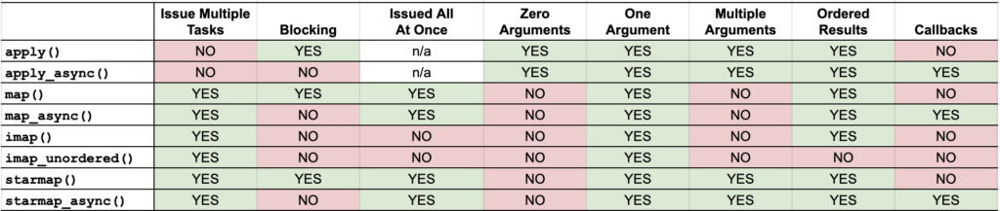
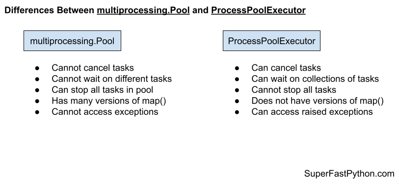

Python Multiprocessing Pool: The Complete Guide
The Python Multiprocessing Pool provides reusable worker processes in Python.
The Pool is a lesser-known class that is a part of the Python standard library. It offers easy-to-use pools of child worker processes and is ideal for parallelizing loops of CPU-bound tasks and for executing tasks asynchronously.
This book-length guide provides a detailed and comprehensive walkthrough of the Python Multiprocessing Pool API.
Some tips:
- You may want to bookmark this guide and read it over a few sittings.
- You can download a zip of all code used in this guide.
- You can get help, ask a question in the comments or email me.
- You can jump to the topics that interest you via the table of contents (below).
Let's dive in.
Python Processes and the Need for Process Pools
So, what are processes and why do we care about process pools?
What Are Python Processes
A process refers to a computer program.
Every Python program is a process and has one thread called the main thread used to execute your program instructions. Each process is, in fact, one instance of the Python interpreter that executes Python instructions (Python byte-code), which is a slightly lower level than the code you type into your Python program.
Sometimes we may need to create new processes to run additional tasks concurrently.
Python provides real system-level processes via the Process class in the multiprocessing module.
The underlying operating system controls how new processes are created. On some systems, that may require spawning a new process, and on others, it may require that the process is forked. The operating-specific method used for creating new processes in Python is not something we need to worry about as it is managed by your installed Python interpreter.
A task can be run in a new process by creating an instance of the Process class and specifying the function to run in the new process via the "target" argument.
...
# define a task to run in a new process
p = Process(target=task)Once the process is created, it must be started by calling the start() method.
...
# start the task in a new process
p.start()We can then wait around for the task to complete by joining the process; for example:
...
# wait for the task to complete
p.join()Whenever we create new processes, we must protect the entry point of the program.
# entry point for the program
if __name__ == '__main__':
# do things...
Tying this together, the complete example of creating a Process to run an ad hoc task function is listed below.
# SuperFastPython.com
# example of running a function in a new process
from multiprocessing import Process
# a task to execute in another process
def task():
print('This is another process', flush=True)
# entry point for the program
if __name__ == '__main__':
# define a task to run in a new process
p = Process(target=task)
# start the task in a new process
p.start()
# wait for the task to complete
p.join()
This is useful for running one-off ad hoc tasks in a separate process, although it becomes cumbersome when you have many tasks to run.
Each process that is created requires the application of resources (e.g. an instance of the Python interpreter and a memory for the process's main thread's stack space). The computational costs for setting up processes can become expensive if we are creating and destroying many processes over and over for ad hoc tasks.
Instead, we would prefer to keep worker processes around for reuse if we expect to run many ad hoc tasks throughout our program.
This can be achieved using a process pool.
What Is a Process Pool
A process pool is a programming pattern for automatically managing a pool of worker processes.
The pool is responsible for a fixed number of processes.
- It controls when they are created, such as when they are needed.
- It also controls what they should do when they are not being used, such as making them wait without consuming computational resources.
The pool can provide a generic interface for executing ad hoc tasks with a variable number of arguments, much like the target property on the Process object, but does not require that we choose a process to run the task, start the process, or wait for the task to complete.
Python provides a process pool via the multiprocessing.Pool class.
Multiprocessing Pools in Python
The multiprocessing.pool.Pool class provides a process pool in Python.
The multiprocessing.pool.Pool class can also be accessed by the alias multiprocessing.Pool. They can be used interchangeably.
It allows tasks to be submitted as functions to the process pool to be executed concurrently.
A process pool object which controls a pool of worker processes to which jobs can be submitted. It supports asynchronous results with timeouts and callbacks and has a parallel map implementation.
-- MULTIPROCESSING — PROCESS-BASED PARALLELISM
To use the process pool, we must first create and configure an instance of the class.
For example:
...
# create a process pool
pool = multiprocessing.pool.Pool(...)Once configured, tasks can be submitted to the pool for execution using blocking and asynchronous versions of apply() and map().
For example:
...
# issues tasks for execution
results = pool.map(task, items)Once we have finished with the process pool, it can be closed and resources used by the pool can be released.
For example:
...
# close the process pool
pool.close()Now that we have a high-level idea about the Python process pool, let's take a look at the life-cycle of the multiprocessing.pool.Pool class.
Life-Cycle of the multiprocessing.Pool
The multiprocessing.Pool provides a pool of generic worker processes.
It was designed to be easy and straightforward to use.
There are four main steps in the life-cycle of using the multiprocessing.Pool class, they are: create, submit, wait, and shutdown.
- Create: Create the process pool by calling the constructor multiprocessing.Pool().
- Submit: Submit tasks synchronously or asynchronously.
- 2a. Submit Tasks Synchronously
- 2b. Submit Tasks Asynchronously
- Wait: Wait and get results as tasks complete (optional).
- 3a. Wait on AsyncResult objects to Complete
- 3b. Wait on AsyncResult objects for Result
- Shutdown: Shutdown the process pool by calling shutdown().
- 4a. Shutdown Automatically with the Context Manager
The following figure helps to picture the life-cycle of the multiprocessing.Pool class.

Let's take a closer look at each life-cycle step in turn.
Step 1. Create the Process Pool
First, a multiprocessing.Pool instance must be created.
When an instance of a multiprocessing.Pool is created it may be configured.
The process pool can be configured by specifying arguments to the multiprocessing.Pool class constructor.
The arguments to the constructor are as follows:
- processes: Maximum number of worker processes to use in the pool.
- initializer: Function executed after each worker process is created.
- initargs: Arguments to the worker process initialization function.
- maxtasksperchild: Limit the maximum number of tasks executed by each worker process.
- context: Configure the multiprocessing context such as the process start method.
Perhaps the most important argument is "processes" that specifies the number of worker child processes in the process pool.
By default the multiprocessing.Pool class constructor does not take any arguments.
For example:
...
# create a default process pool
pool = multiprocessing.Pool()This will create a process pool that will use a number of worker processes that matches the number of logical CPU cores in your system.
We will learn more about how to configure the pool in later sections.
If you can't wait, you can learn more about how to configure the process pool in the tutorial:
Next, let's look at how we might issue tasks to the process pool.
Step 2. Submit Tasks to the Process Pool
Once the multiprocessing.Pool has been created, you can submit tasks execution.
As discussed, there are two main approaches for submitting tasks to the process pool, they are:
- Issue tasks synchronously.
- Issue tasks asynchronously.
Let's take a closer look at each approach in turn.
Step 2a. Issue Tasks Synchronously
Issuing tasks synchronously means that the caller will block until the issued task or tasks have completed.
Blocking calls to the process pool include apply(), map(), and starmap().
We can issue one-off tasks to the process pool using the apply() function.
The apply() function takes the name of the function to execute by a worker process. The call will block until the function is executed by a worker process, after which time it will return.
For example:
...
# issue a task to the process pool
pool.apply(task)The process pool provides a parallel version of the built-in map() function for issuing tasks.
For example:
...
# iterates return values from the issued tasks
for result in map(task, items):
# ...
The starmap() function is the same as the parallel version of the map() function, except that it allows each function call to take multiple arguments. Specifically, it takes an iterable where each item is an iterable of arguments for the target function.
For example:
...
# iterates return values from the issued tasks
for result in starmap(task, items):
# ...
We will look more closely at how to issue tasks in later sections.
Step 2b. Issue Tasks Asynchronously
Issuing tasks asynchronously to the process pool means that the caller will not block, allowing the caller to continue on with other work while the tasks are executing.
The non-blocking calls to issue tasks to the process pool return immediately and provide a hook or mechanism to check the status of the tasks and get the results later. The caller can issue tasks and carry on with the program.
Non-blocking calls to the process pool include apply_async(), map_async(), and starmap_async().
The imap() and imap_unordered() are interesting. They return immediately, so they are technically non-blocking calls. The iterable that is returned will yield return values as tasks are completed. This means traversing the iterable will block.
The apply_async(), map_async(), and starmap_async() functions are asynchronous versions of the apply(), map(), and starmap() functions described above.
They all return an AsyncResult object immediately that provides a handle on the issued task or tasks.
For example:
...
# issue tasks to the process pool asynchronously
result = map_async(task, items)The imap() function takes the name of a target function and an iterable like the map() function.
The difference is that the imap() function is more lazy in two ways:
- imap() issues multiple tasks to the process pool one-by-one, instead of all at once like map().
- imap() returns an iterable that yields results one-by-one as tasks are completed, rather than one-by-one after all tasks have completed like map().
For example:
...
# iterates results as tasks are completed in order
for result in imap(task, items):
# ...
The imap_unordered() is the same as imap(), except that the returned iterable will yield return values in the order that tasks are completed (e.g. out of order).
For example:
...
# iterates results as tasks are completed, in the order they are completed
for result in imap_unordered(task, items):
# ...
You can learn more about how to issue tasks to the process pool in the tutorial:
Now that we know how to issue tasks to the process pool, let's take a closer look at waiting for tasks to complete or getting results.
Step 3. Wait for Tasks to Complete (Optional)
An AsyncResult object is returned when issuing tasks to multiprocessing.Pool the process pool asynchronously.
This can be achieved via any of the following methods on the process pool:
- Pool.apply_async() to issue one task.
- Pool.map_async() to issue multiple tasks.
- Pool.starmap_async() to issue multiple tasks that take multiple arguments.
A AsyncResult provides a handle on one or more issued tasks.
It allows the caller to check on the status of the issued tasks, to wait for the tasks to complete, and to get the results once tasks are completed.
We do not need to use the returned AsyncResult, such as if issued tasks do not return values and we are not concerned with when the tasks complete or whether they are completed successfully.
That is why this step in the life-cycle is optional.
Nevertheless, there are two main ways we can use an AsyncResult to wait, they are:
- Wait for issued tasks to complete.
- Wait for a result from issued tasks.
Let's take a closer look at each approach in turn.
3a. Wait on AsyncResult objects to Complete
We can wait for all tasks to complete via the AsyncResult.wait() function.
This will block until all issued tasks are completed.
For example:
...
# wait for issued task to complete
result.wait()If the tasks have already completed, then the wait() function will return immediately.
A "timeout" argument can be specified to set a limit in seconds for how long the caller is willing to wait.
If the timeout expires before the tasks are complete, the wait() function will return.
When using a timeout, the wait() function does not give an indication that it returned because tasks completed or because the timeout elapsed. Therefore, we can check if the tasks completed via the ready() function.
For example:
...
# wait for issued task to complete with a timeout
result.wait(timeout=10)
# check if the tasks are all done
if result.ready()
print('All Done')
...
else :
print('Not Done Yet')
...
3b. Wait on AsyncResult objects for Result
We can get the result of an issued task by calling the AsyncResult.get() function.
This will return the result of the specific function called to issue the task.
- apply_async(): Returns the return value of the target function.
- map_async(): Returns an iterable over the return values of the target function.
- starmap_async(): Returns an iterable over the return values of the target function.
For example:
...
# get the result of the task or tasks
value = result.get()If the issued tasks have not yet completed, then get() will block until the tasks are finished.
If an issued task raises an exception, the exception will be re-raised once the issued tasks are completed.
We may need to handle this case explicitly if we expect a task to raise an exception on failure.
A "timeout" argument can be specified. If the tasks are still running and do not complete within the specified number of seconds, a multiprocessing.TimeoutError is raised.
You can learn more about the AsyncResult object in the tutorial:
Next, let's look at how we might shutdown the process pool once we are finished with it.
Step 4. Shutdown the Process Pool
The multiprocessing.Pool can be closed once we have no further tasks to issue.
There are two ways to shutdown the process pool.
They are:
- Call Pool.close().
- Call Pool.terminate().
The close() function will return immediately and the pool will not take any further tasks.
For example:
...
# close the process pool
pool.close()Alternatively, we may want to forcefully terminate all child worker processes, regardless of whether they are executing tasks or not.
This can be achieved via the terminate() function.
For example:
...
# forcefully close all worker processes
pool.terminate()We may want to then wait for all tasks in the pool to finish.
This can be achieved by calling the join() function on the pool.
For example:
...
# wait for all issued tasks to complete
pool.join()You can learn more about shutting down the multiprocessing.Pool in the tutorial:
An alternate approach is to shutdown the process pool automatically with the context manager interface.
Step 4a. Multiprocessing Pool Context Manager
A context manager is an interface on Python objects for defining a new run context.
Python provides a context manager interface on the process pool.
This achieves a similar outcome to using a try-except-finally pattern, with less code.
Specifically, it is more like a try-finally pattern, where any exception handling must be added and occur within the code block itself.
For example:
...
# create and configure the process pool
with multiprocessing.Pool() as pool:
# issue tasks to the pool
# ...
# close the pool automatically
There is an important difference with the try-finally block.
If we look at the source code for the multiprocessing.Pool class, we can see that the __exit__() method calls the terminate() method on the process pool when exiting the context manager block.
This means that the pool is forcefully closed once the context manager block is exited. It ensures that the resources of the process pool are released before continuing on, but does not ensure that tasks that have already been issued are completed first.
You can learn more about the context manager interface for the multiprocessing.Pool in the tutorial:
Multiprocessing Pool Example
In this section, we will look at a more complete example of using the multiprocessing.Pool.
Consider a situation where we might want to check if a word is known to the program or not, e.g. whether it is in a dictionary of known words.
If the word is known, that is fine, but if not, we might want to take action for the user, perhaps underline it in read like an automatic spell check.
One approach to implementing this feature would be to load a dictionary of known words and create a hash of each word. We can then hash new words and check if they exist in the set of known hashed words or not.
This is a good problem to explore with the multiprocessing.Pool as hashing words can be relatively slow, especially for large dictionaries of hundreds of thousands or millions of known words.
First, let's develop a serial (non-concurrent) version of the program.
Hash a Dictionary of Words One-By-One
The first step is to select a dictionary of words to use.
On Unix systems, like MacOS and Linux, we have a dictionary already installed, called Unix Words.
It is located in one of the following locations:
- /usr/share/dict/words
- /usr/dict/words
On my system it is located in ‘/usr/share/dict/words‘ and contains 235,886 words calculated using the command:
cat /usr/share/dict/words | wc -lWe can use this dictionary of words.
Alternatively, if we are on windows or wish to have a larger dictionary, we can download one of many free lists of words online.
For example, you can download a list of one million English words from here:
Download this file and unzip the archive to your current working directory with the filename "1m_words.txt".
Looking in the file, we can see that indeed we have a long list of words, one per line.
aaccf
aalders
aaren
aarika
aaron
aartjan
aasen
ab
abacus
abadines
abagael
abagail
abahri
abasolo
abazari
...First, we need to load the list of words into memory.
This can be achieved by first opening the file, then calling the readlines() function that will automatically read ASCII lines of text into a list.
The load_words() function below takes a path to the text file and returns a list of words loaded from the file.
# load a file of words
def load_words(path):
# open the file
with open(path, encoding='utf-8') as file:
# read all data as lines
return file.readlines()
Next, we need to hash each word.
We will intentionally select a slow hash function in this example, specifically the SHA512 algorithm.
This is available in Python via the hashlib.sha512() function.
You can learn more about the hashlib module here:
First, we can create an instance of the hashing object by calling the sha512() function.
...
# create the hash object
hash_object = sha512()Next, we can convert a given word to bytes and then hash it using the hash function.
...
# convert the string to bytes
byte_data = word.encode('utf-8')
# hash the word
hash_object.update(byte_data)
Finally, we can get a hex string representation of the hash for the word by calling the hashlib.hexdigest() function.
...
# get the hex hash of the word
h = hash_object.hexdigest()Tying this together, the hash_word() function below takes a word and returns a hex hash code of the word.
# hash one word using the SHA algorithm
def hash_word(word):
# create the hash object
hash_object = sha512()
# convert the string to bytes
byte_data = word.encode('utf-8')
# hash the word
hash_object.update(byte_data)
# get the hex hash of the word
return hash_object.hexdigest()
That's about all there is to it.
We can define a function that will drive the program, first loading the list of words by calling our load_words() then creating a set of hashes of known words by calling our hash_word() for each loaded word.
The main() function below implements this.
# entry point
def main():
# load a file of words
path = '1m_words.txt'
words = load_words(path)
print(f'Loaded {len(words)} words from {path}')
# hash all known words
known_words = {hash_word(word) for word in words}
print(f'Done, with {len(known_words)} hashes')
Tying this all together, the complete example of loading a dictionary of words and creating a set of known word hashes is listed below.
# SuperFastPython.com
# example of hashing a word list serially
from hashlib import sha512
# hash one word using the SHA algorithm
def hash_word(word):
# create the hash object
hash_object = sha512()
# convert the string to bytes
byte_data = word.encode('utf-8')
# hash the word
hash_object.update(byte_data)
# get the hex hash of the word
return hash_object.hexdigest()
# load a file of words
def load_words(path):
# open the file
with open(path, encoding='utf-8') as file:
# read all data as lines
return file.readlines()
# entry point
def main():
# load a file of words
path = '1m_words.txt'
words = load_words(path)
print(f'Loaded {len(words)} words from {path}')
# hash all known words
known_words = {hash_word(word) for word in words}
print(f'Done, with {len(known_words)} hashes')
if __name__ == '__main__':
main()
Running the example, first loads the file and reports that a total of 1,049,938 words were loaded.
The list of words is then hashed and the hashes are stored in a set.
The program reports that a total of 979,250 hashes were stored, suggesting thousands of duplicates in the dictionary.
The program takes about 1.6 seconds to run on a modern system.
How long does the example take to run on your system?
Let me know in the comments below.
Loaded 1049938 words from 1m_words.txt
Done, with 979250 hashesNext, we can update the program to hash the words in parallel.
Hash a Dictionary of Words Concurrently with map()
Hashing words is relatively slow, but even so, hashing nearly one million words takes under two seconds.
Nevertheless, we can accelerate the process by making use of all CPUs in the system and hashing the words concurrently.
This can be achieved using the multiprocessing.Pool.
Firstly, we can create the process pool and specify the number of concurrent processes to run. I recommend configuring the pool to match the number of physical CPU cores in your system.
I have four cores, so the example will use four cores, but update it for the number of cores you have available.
...
# create the process pool
with Pool(4) as pool:
# ...
Next, we need to submit the tasks to the process pool, that is, the hashing of each word.
Because the task is simply applying a function for each item in a list, we can use the map() function directly.
For example:
...
# create a set of word hashes
known_words = set(pool.map(hash_word, words))And that's it.
For example, the updated version of the main() function to hash words concurrently is listed below.
# entry point
def main():
# load a file of words
path = '1m_words.txt'
words = load_words(path)
print(f'Loaded {len(words)} words from {path}')
# create the process pool
with Pool(4) as pool:
# create a set of word hashes
known_words = set(pool.map(hash_word, words))
print(f'Done, with {len(known_words)} hashes')
Tying this together, the complete example is listed below.
# SuperFastPython.com
# example of hashing a word list in parallel with a process pool
from math import ceil
from hashlib import sha512
from multiprocessing import Pool
# hash one word using the SHA algorithm
def hash_word(word):
# create the hash object
hash_object = sha512()
# convert the string to bytes
byte_data = word.encode('utf-8')
# hash the word
hash_object.update(byte_data)
# get the hex hash of the word
return hash_object.hexdigest()
# load a file of words
def load_words(path):
# open the file
with open(path) as file:
# read all data as lines
return file.readlines()
# entry point
def main():
# load a file of words
path = '1m_words.txt'
words = load_words(path)
print(f'Loaded {len(words)} words from {path}')
# create the process pool
with Pool(4) as pool:
# create a set of word hashes
known_words = set(pool.map(hash_word, words))
print(f'Done, with {len(known_words)} hashes')
if __name__ == '__main__':
main()
Running the example loads the words as before then applies the hash_word() function to each word in the loaded list as before, except this time the functions are executed in parallel using the process pool.
This concurrent version does offer a minor speedup, taking about 1.1 seconds on my system, compared to 1.6 seconds for the serial version.
That is about 0.6 seconds faster or a 1.55x speed-up.
Loaded 1049938 words from 1m_words.txt
Done, with 979250 hashesHow to Configure the Multiprocessing Pool
The process pool can be configured by specifying arguments to the multiprocessing.pool.Pool class constructor.
The arguments to the constructor are as follows:
- processes: Maximum number of worker processes to use in the pool.
- initializer: Function executed after each worker process is created.
- initargs: Arguments to the worker process initialization function.
- maxtasksperchild: Limit the maximum number of tasks executed by each worker process.
- context: Configure the multiprocessing context such as the process start method.
By default the multiprocessing.pool.Pool class constructor does not take any arguments.
For example:
...
# create a default process pool
pool = multiprocessing.pool.Pool()This will create a process pool that will use a number of worker processes that matches the number of logical CPU cores in your system.
It will not call a function that initializes the worker processes when they are created.
Each worker process will be able to execute an unlimited number of tasks within the pool.
Finally, the default multiprocessing context will be used, along with the currently configured or default start method for the system.
Now that we know what configuration the process pool takes, let's look at how we might configure each aspect of the process pool.
How to Configure the Number of Worker Processes
We can configure the number of worker processes in the multiprocessing.pool.Pool by setting the "processes" argument in the constructor.
processes is the number of worker processes to use. If processes is None then the number returned by os.cpu_count() is used.
-- multiprocessing — Process-based parallelism
We can set the "processes" argument to specify the number of child processes to create and use as workers in the process pool.
For example:
...
# create a process pool with 4 workers
pool = multiprocessing.pool.Pool(processes=4)The "processes" argument is the first argument in the constructor and does not need to be specified by name to be set, for example:
...
# create a process pool with 4 workers
pool = multiprocessing.pool.Pool(4)If we are using the context manager to create the process pool so that it is automatically shutdown, then you can configure the number of processes in the same manner.
For example:
...
# create a process pool with 4 workers
with multiprocessing.pool.Pool(4):
# ...
You can learn more about how to configure the number of worker processes in the tutorial:
Next, let's look at how we might configure the worker process initialization function.
How to Configure the Initialization Function
We can configure worker processes in the process pool to execute an initialization function prior to executing tasks.
This can be achieved by setting the "initializer" argument when configuring the process pool via the class constructor.
The "initializer" argument can be set to the name of a function that will be called to initialize the worker processes.
If initializer is not None then each worker process will call initializer(*initargs) when it starts.
-- multiprocessing — Process-based parallelism
For example:
# worker process initialization function
def worker_init():
# ...
...
# create a process pool and initialize workers
pool = multiprocessing.pool.Pool(initializer=worker_init)
If our worker process initialization function takes arguments, they can be specified to the process pool constructor via the "initargs" argument, which takes an ordered list or tuple of arguments for the custom initialization function.
For example:
# worker process initialization function
def worker_init(arg1, arg2, arg3):
# ...
...
# create a process pool and initialize workers
pool = multiprocessing.pool.Pool(initializer=worker_init, initargs=(arg1, arg2, arg3))
You can learn more about how to initialize worker processes in the tutorial:
Next, let's look at how we might configure the maximum tasks per child worker process.
How to Configure the Max Tasks Per Child
We can limit the maximum number of tasks completed by each child process in the process pool by setting the "maxtasksperchild" argument in the multiprocessing.pool.Pool class constructor when configuring a new process pool.
For example:
...
# create a process loop and limit the number of tasks in each worker
pool = multiprocessing.pool.Pool(maxtasksperchild=5)The maxtasksperchild takes a positive integer number of tasks that may be completed by a child worker process, after which the process will be terminated and a new child worker process will be created to replace it.
maxtasksperchild is the number of tasks a worker process can complete before it will exit and be replaced with a fresh worker process, to enable unused resources to be freed.
-- multiprocessing — Process-based parallelism
By default the maxtasksperchild argument is set to None, which means each child worker process will run for the lifetime of the process pool.
The default maxtasksperchild is None, which means worker processes will live as long as the pool.
-- multiprocessing — Process-based parallelism
You can learn more about configuring the max tasks per worker process in the tutorial:
Next, let's look at how we might configure the multiprocess context for the pool.
How to Configure the Context
We can set the context for the process pool via the "context" argument to the multiprocessing.pool.Pool class constructor.
context can be used to specify the context used for starting the worker processes.
-- multiprocessing — Process-based parallelism
The "context" is an instance of a multiprocessing context configured with a start method, created via the multiprocessing.get_context() function.
By default, "context" is None, which uses the current default context and start method configured for the application.
A start method is the technique used to start child processes in Python.
There are three start methods, they are:
- spawn: start a new Python process.
- fork: copy a Python process from an existing process.
- forkserver: new process from which future forked processes will be copied.
Multiprocessing contexts provide a more flexible way to manage process start methods directly within a program, and may be a preferred approach to changing start methods in general, especially within a Python library.
A new context can be created with a given start method and passed to the process pool.
For example:
...
# create a process context
ctx = multiprocessing.get_context('fork')
# create a process pool with a given context
pool = multiprocessing.pool.Pool(context=ctx)You can learn more about configuring the context for the process pool in the tutorial:
Multiprocessing Pool Issue Tasks
In this section, we will take a closer look at the different ways we can issue tasks to the multiprocessing pool.
The pool provides 8 ways to issue tasks to workers in the process pool.
They are:
- Pool.apply()
- Pool.apply_async()
- Pool.map()
- Pool.map_async()
- Pool.imap()
- Pool.imap_unordered()
- Pool.starmap()
- Pool.starmap_async()
Let's take a closer and brief look at each approach in turn.
How to Use Pool.apply()
We can issue one-off tasks to the process pool using the apply() function.
The apply() function takes the name of the function to execute by a worker process. The call will block until the function is executed by a worker process, after which time it will return.
For example:
...
# issue a task to the process pool
pool.apply(task)The Pool.apply() function is a parallel version of the now deprecated built-in apply() function.
In summary, the capabilities of the apply() method are as follows:
- Issues a single task to the process pool.
- Supports multiple arguments to the target function.
- Blocks until the call to the target function is complete.
You can learn more about the apply() method in the tutorial:
How to Use Pool.apply_async()
We can issue asynchronous one-off tasks to the process pool using the apply_async() function.
Asynchronous means that the call to the process pool does not block, allowing the caller that issued the task to carry on.
The apply_async() function takes the name of the function to execute in a worker process and returns immediately with a AsyncResult object for the task.
It supports a callback function for the result and an error callback function if an error is raised.
For example:
...
# issue a task asynchronously to the process pool
result = pool.apply_async(task)Later the status of the issued task may be checked or retrieved.
For example:
...
# get the result from the issued task
value = result.get()In summary, the capabilities of the apply_async() method are as follows:
- Issues a single task to the process pool.
- Supports multiple arguments to the target function.
- Does not block, instead returns a AsyncResult.
- Supports callback for the return value and any raised errors.
You can learn more about the apply_async() method in the tutorial:
How to Use Pool.map()
The process pool provides a parallel version of the built-in map() function for issuing tasks.
The map() function takes the name of a target function and an iterable. A task is created to call the target function for each item in the provided iterable. It returns an iterable over the return values from each call to the target function.
The iterable is first traversed and all tasks are issued at once. A chunksize can be specified to split the tasks into groups which may be sent to each worker process to be executed in batch.
For example:
...
# iterates return values from the issued tasks
for result in pool.map(task, items):
# ...
The Pool.map() function is a parallel version of the built-in map() function.
In summary, the capabilities of the map() method are as follows:
- Issue multiple tasks to the process pool all at once.
- Returns an iterable over return values.
- Supports a single argument to the target function.
- Blocks until all issued tasks are completed.
- Allows tasks to be grouped and executed in batches by workers.
You can learn more about the map() method in the tutorial:
How to Use Pool.map_async()
The process pool provides an asynchronous version of the built-in map() function for issuing tasks called map_async() function.
The map_async() function takes the name of a target function and an iterable. A task is created to call the target function for each item in the provided iterable. It does not block and returns immediately with an AsyncResult that may be used to access the results.
The iterable is first traversed and all tasks are issued at once. A chunksize can be specified to split the tasks into groups which may be sent to each worker process to be executed in batch. It supports a callback function for the result and an error callback function if an error is raised.
For example:
...
# issue tasks to the process pool asynchronously
result = pool.map_async(task, items)Later the status of the tasks can be checked and the return values from each call to the target function may be iterated.
For example:
...
# iterate over return values from the issued tasks
for value in result.get():
# ...
In summary, the capabilities of the map_async() method are as follows:
- Issue multiple tasks to the process pool all at once.
- Supports a single argument to the target function.
- Does not not block, instead returns a AsyncResult for accessing results later.
- Allows tasks to be grouped and executed in batches by workers.
- Supports callback for the return value and any raised errors.
You can learn more about the map_async() method in the tutorial:
How to Use Pool.imap()
We can issue tasks to the process pool one-by-one via the imap() function.
The imap() function takes the name of a target function and an iterable. A task is created to call the target function for each item in the provided iterable.
It returns an iterable over the return values from each call to the target function. The iterable will yield return values as tasks are completed, in the order that tasks were issued.
The imap() function is lazy in that it traverses the provided iterable and issues tasks to the process pool one by one as space becomes available in the process pool. A chunksize can be specified to split the tasks into groups which may be sent to each worker process to be executed in batch.
For example:
...
# iterates results as tasks are completed in order
for result in pool.imap(task, items):
# ...
The Pool.imap() function is a parallel version of the now deprecated itertools.imap() function.
In summary, the capabilities of the imap() method are as follows:
- Issue multiple tasks to the process pool, one-by-one.
- Returns an iterable over return values.
- Supports a single argument to the target function.
- Blocks until each task is completed in order they were issued.
- Allows tasks to be grouped and executed in batches by workers.
You can learn more about the imap() method in the tutorial:
How to Use Pool.imap_unordered()
We can issue tasks to the process pool one-by-one via the imap_unordered() function.
The imap_unordered() function takes the name of a target function and an iterable. A task is created to call the target function for each item in the provided iterable.
It returns an iterable over the return values from each call to the target function. The iterable will yield return values as tasks are completed, in the order that tasks were completed, not the order they were issued.
The imap_unordered() function is lazy in that it traverses the provided iterable and issues tasks to the process pool one by one as space becomes available in the process pool. A chunksize can be specified to split the tasks into groups which may be sent to each worker process to be executed in batch.
For example:
...
# iterates results as tasks are completed, in the order they are completed
for result in pool.imap_unordered(task, items):
# ...
In summary, the capabilities of the imap_unordered() method are as follows:
- Issue multiple tasks to the process pool, one-by-one.
- Returns an iterable over return values.
- Supports a single argument to the target function.
- Blocks until each task is completed in the order they are completed.
- Allows tasks to be grouped and executed in batches by workers.
You can learn more about the imap_unordered() method in the tutorial:
How to Use Pool.starmap()
We can issue multiple tasks to the process pool using the starmap() function.
The starmap() function takes the name of a target function and an iterable. A task is created to call the target function for each item in the provided iterable. Each item in the iterable may itself be an iterable, allowing multiple arguments to be provided to the target function.
It returns an iterable over the return values from each call to the target function. The iterable is first traversed and all tasks are issued at once. A chunksize can be specified to split the tasks into groups which may be sent to each worker process to be executed in batch.
For example:
...
# iterates return values from the issued tasks
for result in pool.starmap(task, items):
# ...
The Pool.starmap() function is a parallel version of the itertools.starmap() function.
In summary, the capabilities of the starmap() method are as follows:
- Issue multiple tasks to the process pool all at once.
- Returns an iterable over return values.
- Supports multiple arguments to the target function.
- Blocks until all issued tasks are completed.
- Allows tasks to be grouped and executed in batches by workers.
You can learn more about the starmap() method in the tutorial:
How to Use Pool.starmap_async()
We can issue multiple tasks asynchronously to the process pool using the starmap_async() function.
The starmap_async() function takes the name of a target function and an iterable. A task is created to call the target function for each item in the provided iterable. Each item in the iterable may itself be an iterable, allowing multiple arguments to be provided to the target function.
It does not block and returns immediately with an AsyncResult that may be used to access the results.
The iterable is first traversed and all tasks are issued at once. A chunksize can be specified to split the tasks into groups which may be sent to each worker process to be executed in batch. It supports a callback function for the result and an error callback function if an error is raised.
For example:
...
# issue tasks to the process pool asynchronously
result = pool.starmap_async(task, items)Later the status of the tasks can be checked and the return values from each call to the target function may be iterated.
For example:
...
# iterate over return values from the issued tasks
for value in result.get():
# ...
In summary, the capabilities of the starmap_async() method are as follows:
- Issue multiple tasks to the process pool all at once.
- Supports multiple arguments to the target function.
- Does not not block, instead returns a AsyncResult for accessing results later.
- Allows tasks to be grouped and executed in batches by workers.
- Supports callback for the return value and any raised errors.
You can learn more about the starmap_async() method in the tutorial:
How To Choose The Method
There are so many methods to issue tasks to the process pool, how do you choose?
Some properties we may consider when comparing functions used to issue tasks to the process pool include:
- The number of tasks we may wish to issue at once.
- Whether the function call to issue tasks is blocking or not.
- Whether all of the tasks are issued at once or one-by-one
- Whether the call supports zero, one, or multiple arguments to the target function.
- Whether results are returned in order or not.
- Whether the call supports callback functions or not.
The table below summarizes each of these properties and whether they are supported by each call to the process pool.
A YES (green) cell in the table does not mean "good". It means that the function call has a given property which may or may not be useful or required for your specific use case.

You can learn more about how to choose a method for issuing tasks to the multiprocessing pool in the tutorial:
How to Use AsyncResult in Detail
An multiprocessing.pool.AsyncResult object is returned when issuing tasks to multiprocessing.pool.Pool the process pool asynchronously.
This can be achieved via any of the following methods on the process pool:
- Pool.apply_async() to issue one task.
- Pool.map_async() to issue multiple tasks.
- Pool.starmap_async() to issue multiple tasks that take multiple arguments.
An AsyncResult object provides a handle on one or more issued tasks.
It allows the caller to check on the status of the issued tasks, to wait for the tasks to complete, and to get the results once tasks are completed.
How to Get an AsyncResult Object
The AsyncResult class is straightforward to use.
First, you must get an AsyncResult object by issuing one or more tasks to the process pool using any of the apply_async(), map_async(), or starmap_async() functions.
For example:
...
# issue a task to the process pool
result = pool.apply_async(...)Once you have an AsyncResult object, you can use it to query the status and get results from the task.
How to Get a Result
We can get the result of an issued task by calling the AsyncResult.get() function.
Return the result when it arrives.
-- multiprocessing — Process-based parallelism
This will return the result of the specific function called to issue the task.
- apply_async(): Returns the return value of the target function.
- map_async(): Returns an iterable over the return values of the target function.
- starmap_async(): Returns an iterable over the return values of the target function.
For example:
...
# get the result of the task or tasks
value = result.get()If the issued tasks have not yet completed, then get() will block until the tasks are finished.
A "timeout" argument can be specified. If the tasks are still running and do not complete within the specified number of seconds, a multiprocessing.TimeoutError is raised.
If timeout is not None and the result does not arrive within timeout seconds then multiprocessing.TimeoutError is raised.
-- multiprocessing — Process-based parallelism
For example:
...
try:
# get the task result with a timeout
value = result.get(timeout=10)
except multiprocessing.TimeoutError as e:
# ...
If an issued task raises an exception, the exception will be re-raised once the issued tasks are completed.
We may need to handle this case explicitly if we expect a task to raise an exception on failure.
If the remote call raised an exception then that exception will be re-raised by get().
-- multiprocessing — Process-based parallelism
For example:
...
try:
# get the task result that might raise an exception
value = result.get()
except Exception as e:
# ...
How to Wait For Completion
We can wait for all tasks to complete via the AsyncResult.wait() function.
This will block until all issued tasks are completed.
For example:
...
# wait for issued task to complete
result.wait()If the tasks have already completed, then the wait() function will return immediately.
A "timeout" argument can be specified to set a limit in seconds for how long the caller is willing to wait.
Wait until the result is available or until timeout seconds pass.
-- multiprocessing — Process-based parallelism
If the timeout expires before the tasks are complete, the wait() function will return.
When using a timeout, the wait() function does not give an indication that it returned because tasks completed or because the timeout elapsed. Therefore, we can check if the tasks completed via the ready() function.
For example:
...
# wait for issued task to complete with a timeout
result.wait(timeout=10)
# check if the tasks are all done
if result.ready()
print('All Done')
...
else :
print('Not Done Yet')
...
How to Check if Tasks Are Completed
We can check if the issued tasks are completed via the AsyncResult.ready() function.
Return whether the call has completed.
-- multiprocessing — Process-based parallelism
It returns True if the tasks have completed, successfully or otherwise, or False if the tasks are still running.
For example:
...
# check if tasks are still running
if result.ready():
print('Tasks are done')
else:
print('Tasks are not done')
How to Check if Tasks Were Successful
We can check if the issued tasks completed successfully via the AsyncResult.successful() function.
Issued tasks are successful if no tasks raised an exception.
If at least one issued task raised an exception, then the call was not successful and the successful() function will return False.
This function should be called after it is known that the tasks have completed, e.g. ready() returns True.
For example:
...
# check if the tasks have completed
if result.ready():
# check if the tasks were successful
if result.successful():
print('Successful')
else:
print('Unsuccessful')
If the issued tasks are still running, a ValueError is raised.
Return whether the call completed without raising an exception. Will raise ValueError if the result is not ready.
-- multiprocessing — Process-based parallelism
For example:
...
try:
# check if the tasks were successful
if result.successful():
print('Successful')
except ValueError as e:
print('Tasks still running')
You can learn more about how to use an AsyncResult object in the tutorial:
Next, let’s take a look at how to use callback functions with asynchronous tasks.
Multiprocessing Pool Callback Functions
The multiprocessing.Pool supports custom callback functions.
Callback functions are called in two situations:
- With the results of a task.
- When an error is raised in a task.
Let’s take a closer look at each in turn.
How to Configure a Callback Function
Result callbacks are supported in the process pool when issuing tasks asynchronously with any of the following functions:
- apply_async(): For issuing a single task asynchronously.
- map_async(): For issuing multiple tasks with a single argument asynchronously.
- starmap_async(): For issuing multiple tasks with multiple arguments asynchronously.
A result callback can be specified via the "callback" argument.
The argument specifies the name of a custom function to call with the result of asynchronous task or tasks.
Note, a configured callback function will be called, even if your task function does not have a return value. In that case, a default return value of None will be passed as an argument to the callback function.
The function may have any name you like, as long as it does not conflict with a function name already in use.
If callback is specified then it should be a callable which accepts a single argument. When the result becomes ready callback is applied to it
-- multiprocessing — Process-based parallelism
For example, if apply_async() is configured with a callback, then the callback function will be called with the return value of the task function that was executed.
# result callback function
def result_callback(result):
print(result, flush=True)
...
# issue a single task
result = apply_async(..., callback=result_callback)
Alternatively, if map_async() or starmap_async() are configured with a callback, then the callback function will be called with an iterable of return values from all tasks issued to the process pool.
# result callback function
def result_callback(result):
# iterate all results
for value in result:
print(value, flush=True)
...
# issue a single task
result = map_async(..., callback=result_callback)
Result callbacks should be used to perform a quick action with the result or results of issued tasks from the process pool.
They should not block or execute for an extended period as they will occupy the resources of the process pool while running.
Callbacks should complete immediately since otherwise the thread which handles the results will get blocked.
-- multiprocessing — Process-based parallelism
How to Configure an Error Callback Function
Error callbacks are supported in the process pool when issuing tasks asynchronously with any of the following functions:
- apply_async(): For issuing a single task asynchronously.
- map_async(): For issuing multiple tasks with a single argument asynchronously.
- starmap_async(): For issuing multiple tasks with multiple arguments asynchronously.
An error callback can be specified via the "error_callback" argument.
The argument specifies the name of a custom function to call with the error raised in an asynchronous task.
Note, the first task to raise an error will be called, not all tasks that raise an error.
The function may have any name you like, as long as it does not conflict with a function name already in use.
If error_callback is specified then it should be a callable which accepts a single argument. If the target function fails, then the error_callback is called with the exception instance.
-- multiprocessing — Process-based parallelism
For example, if apply_async() is configured with an error callback, then the callback function will be called with the error raised in the task.
# error callback function
def custom_callback(error):
print(error, flush=True)
...
# issue a single task
result = apply_async(..., error_callback=custom_callback)
Error callbacks should be used to perform a quick action with the error raised by a task in the process pool.
They should not block or execute for an extended period as they will occupy the resources of the process pool while running.
Next, let’s look at common usage patterns for the multiprocessing pool.
Multiprocessing Pool Common Usage Patterns
The multiprocessing.Pool provides a lot of flexibility for executing concurrent tasks in Python.
Nevertheless, there are a handful of common usage patterns that will fit most program scenarios.
This section lists the common usage patterns with worked examples that you can copy and paste into your own project and adapt as needed.
The patterns we will look at are as follows:
- Pattern 1: map() and Iterate Results Pattern
- Pattern 2: apply_async() and Forget Pattern
- Pattern 3: map_async() and Forget Pattern
- Pattern 4: imap_unordered() and Use as Completed Pattern
- Pattern 5: imap_unordered() and Wait for First Pattern
We will use a contrived task in each example that will sleep for a random amount of time equal to less than one second. You can easily replace this example task with your own task in each pattern.
Let's start with the first usage pattern.
Pattern 1: map() and Iterate Results Pattern
This pattern involves calling the same function with different arguments then iterating over the results.
It is a concurrent and parallel version of the built-in map() function with the main difference that all function calls are issued to the process pool immediately and we cannot process results until all tasks are completed.
It requires that we call the map() function with our target function and an iterable of arguments and process return values from each function call in a for loop.
...
# issue tasks and process results
for result in pool.map(task, range(10)):
print(f'>got {result}')
You can learn more about how to use the map() function on the process pool in the tutorial:
This pattern can be used for target functions that take multiple arguments by changing the map() function for the starmap() function.
You can learn more about the starmap() function in the tutorial:
Tying this together, the complete example is listed below.
# SuperFastPython.com
# example of the map an iterate results usage pattern
from time import sleep
from random import random
from multiprocessing import Pool
# task to execute in a new process
def task(value):
# generate a random value
random_value = random()
# block for moment
sleep(random_value)
# return a value
return (value, random_value)
# protect the entry point
if __name__ == '__main__':
# create the process pool
with Pool() as pool:
# issue tasks and process results
for result in pool.map(task, range(10)):
print(f'>got {result}')
Running the example, we can see that the map() function is called the task() function for each argument in the range 0 to 9.
Watching the example run, we can see that all tasks are issued to the process pool, complete, then once all results are available will the main process iterate over the return values.
>got (0, 0.5223115198151266)
>got (1, 0.21783676257361628)
>got (2, 0.2987824437365636)
>got (3, 0.7878833057358723)
>got (4, 0.3656686303407395)
>got (5, 0.19329669829989338)
>got (6, 0.8684106781905665)
>got (7, 0.19365670382002365)
>got (8, 0.6705626483476922)
>got (9, 0.036792658761421904)Pattern 2: apply_async() and Forget Pattern
This pattern involves issuing one task to the process pool and then not waiting for the result. Fire and forget.
This is a helpful approach for issuing ad hoc tasks asynchronously to the process pool, allowing the main process to continue on with other aspects of the program.
This can be achieved by calling the apply_async() function with the name of the target function and any arguments the target function may take.
The apply_async() function will return an AsyncResult object that can be ignored.
For example:
...
# issue task
_ = pool.apply_async(task, args=(1,))You can learn more about the apply_async() function in the tutorial:
Once all ad hoc tasks have been issued, we may want to wait for the tasks to complete before closing the process pool.
This can be achieved by calling the close() function on the pool to prevent it from receiving any further tasks, then joining the pool to wait for the issued tasks to complete.
...
# close the pool
pool.close()
# wait for all tasks to complete
pool.join()You can learn more about joining the process pool in the tutorial:
Tying this together, the complete example is listed below.
# SuperFastPython.com
# example of the apply_async and forget usage pattern
from time import sleep
from random import random
from multiprocessing import Pool
# task to execute in a new process
def task(value):
# generate a random value
random_value = random()
# block for moment
sleep(random_value)
# prepare result
result = (value, random_value)
# report results
print(f'>task got {result}', flush=True)
# protect the entry point
if __name__ == '__main__':
# create the process pool
with Pool() as pool:
# issue task
_ = pool.apply_async(task, args=(1,))
# close the pool
pool.close()
# wait for all tasks to complete
pool.join()
Running the example fires a task into the process pool and forgets about it, allowing it to complete in the background.
The task is issued and the main process is free to continue on with other parts of the program.
In this simple example, there is nothing else to go on with, so the main process then closes the pool and waits for all ad hoc fire-and-forget tasks to complete before terminating.
>task got (1, 0.1278130542799114)Pattern 3: map_async() and Forget Pattern
This pattern involves issuing many tasks to the process pool and then moving on. Fire-and-forget for multiple tasks.
This is helpful for applying the same function to each item in an iterable and then not being concerned with the result or return values.
The tasks are issued asynchronously, allowing the caller to continue on with other parts of the program.
This can be achieved with the map_async() function that takes the name of the target task and an iterable of arguments for each function call.
The function returns an AsyncResult object that provides a handle on the issued tasks, that can be ignored in this case.
For example:
...
# issue tasks to the process pool
_ = pool.map_async(task, range(10))You can learn more about the map_async() function in the tutorial:
Once all asynchronous tasks have been issued and there is nothing else in the program to do, we can close the process pool and wait for all issued tasks to complete.
...
# close the pool
pool.close()
# wait for all tasks to complete
pool.join()Tying this together, the complete example is listed below.
# SuperFastPython.com
# example of the map_async and forget usage pattern
from time import sleep
from random import random
from multiprocessing import Pool
# task to execute in a new process
def task(value):
# generate a random value
random_value = random()
# block for moment
sleep(random_value)
# prepare result
result = (value, random_value)
# report results
print(f'>task got {result}', flush=True)
# protect the entry point
if __name__ == '__main__':
# create the process pool
with Pool() as pool:
# issue tasks to the process pool
_ = pool.map_async(task, range(10))
# close the pool
pool.close()
# wait for all tasks to complete
pool.join()
Running the example issues ten tasks to the process pool.
The call returns immediately and the tasks are executed asynchronously. This allows the main process to continue on with other parts of the program.
There is nothing else to do in this simple example, so the process pool is then closed and the main process blocks, waiting for the issued tasks to complete.
>task got (1, 0.07000157647675087)
>task got (0, 0.23377533908752213)
>task got (4, 0.5817185149247178)
>task got (3, 0.592827746280798)
>task got (9, 0.39735803187389696)
>task got (5, 0.6693476274660454)
>task got (6, 0.7423437379725698)
>task got (7, 0.8881483088702092)
>task got (2, 0.9846685764130632)
>task got (8, 0.9740735804232945)Pattern 4: imap_unordered() and Use as Completed Pattern
This pattern is about issuing tasks to the pool and using results for tasks as they become available.
This means that results are received out of order, if tasks take a variable amount of time, rather than in the order that the tasks were issued to the process pool.
This can be achieved with the imap_unordered() function. It takes a function and an iterable of arguments, just like the map() function.
It returns an iterable that yields return values from the target function as the tasks are completed.
We can call the imap_unordered() function and iterate the return values directly in a for-loop.
For example:
...
# issue tasks and process results
for result in pool.imap_unordered(task, range(10)):
print(f'>got {result}')
You can learn more about the imap_unordered() function in the tutorial:
Tying this together, the complete example is listed below.
# SuperFastPython.com
# example of the imap_unordered and use as completed usage pattern
from time import sleep
from random import random
from multiprocessing import Pool
# task to execute in a new process
def task(value):
# generate a random value
random_value = random()
# block for moment
sleep(random_value)
# return result
return (value, random_value)
# protect the entry point
if __name__ == '__main__':
# create the process pool
with Pool() as pool:
# issue tasks and process results
for result in pool.imap_unordered(task, range(10)):
print(f'>got {result}')
Running the example issues all tasks to the pool, then receives and processes results in the order that tasks are completed, not the order that tasks were issued to the pool, e.g. unordered.
>got (6, 0.27185692519830873)
>got (7, 0.30517408991009)
>got (2, 0.4565919197158417)
>got (0, 0.4866540025699637)
>got (5, 0.5594145856578583)
>got (3, 0.6073766993405534)
>got (1, 0.6665710827894051)
>got (8, 0.4987608917896833)
>got (4, 0.8036914328418536)
>got (9, 0.49972284685751034)Pattern 5: imap_unordered() and Wait for First Pattern
This pattern involves issuing many tasks to the process pool asynchronously, then waiting for the first result or first task to finish.
It is a helpful pattern when there may be multiple ways of getting a result but only a single or the first result is required, after which, all other tasks become irrelevant.
This can be achieved by the imap_unordered() function that, like the map() function, takes the name of a target function and an iterable of arguments.
It returns an iterable that yields return values in the order that tasks complete.
This iterable can then be traversed once manually via the next() built-in function which will return only once the first task to finish returns.
For example:
...
# issue tasks and process results
it = pool.imap_unordered(task, range(10))
# get the result from the first task to complete
result = next(it)The result can then be processed and the process pool can be terminated, forcing any remaining tasks to stop immediately. This happens automatically via the context manager interface.
Tying this together, the complete example is listed below.
# SuperFastPython.com
# example of the imap_unordered and wait for first result usage pattern
from time import sleep
from random import random
from multiprocessing import Pool
# task to execute in a new process
def task(value):
# generate a random value
random_value = random()
# block for moment
sleep(random_value)
# return result
return (value, random_value)
# protect the entry point
if __name__ == '__main__':
# create the process pool
with Pool() as pool:
# issue tasks and process results
it = pool.imap_unordered(task, range(10))
# get the result from the first task to complete
result = next(it)
# report first result
print(f'>got {result}')
Running the example first issues all of the tasks asynchronously.
The result from the first task to complete is then requested, which blocks until a result is available.
One task completes, returns a value, which is then processed, then the process pool and all remaining tasks are terminated automatically.
>got (4, 0.41272860928850164)When to Use the Multiprocessing Pool
The multiprocessing.Pool is powerful and flexible, although is not suited for all situations where you need to run a background task or apply a function to each item in an iterable in parallel.
In this section, we will look at some general cases where it is a good fit, and where it isn't, then we'll look at broad classes of tasks and why they are or are not appropriate for the multiprocessing.Pool.
Use multiprocessing.Pool When...
- Your tasks can be defined by a pure function that has no state or side effects.
- Your task can fit within a single Python function, likely making it simple and easy to understand.
- You need to perform the same task many times, e.g. homogeneous tasks.
- You need to apply the same function to each object in a collection in a for-loop.
Process pools work best when applying the same pure function on a set of different data (e.g. homogeneous tasks, heterogeneous data). This makes code easier to read and debug. This is not a rule, just a gentle suggestion.
Use Multiple multiprocessing.Pool When...
- You need to perform groups of different types of tasks; one process pool could be used for each task type.
- You need to perform a pipeline of tasks or operations; one process pool can be used for each step.
Process pools can operate on tasks of different types (e.g. heterogeneous tasks), although it may make the organization of your program and debugging easy if a separate process pool is responsible for each task type. This is not a rule, just a gentle suggestion.
Don't Use multiprocessing.Pool When...
- You have a single task; consider using the Process class with the "target" argument.
- You have long running tasks, such as monitoring or scheduling; consider extending the Process class.
- Your task functions require state; consider extending the Process class.
- Your tasks require coordination; consider using a Process and patterns like a Barrier or Semaphore.
- Your tasks require synchronization; consider using a Process and Locks.
- You require a process trigger on an event; consider using the Process class.
The sweet spot for process pools is in dispatching many similar tasks, the results of which may be used later in the program. Tasks that don't fit neatly into this summary are probably not a good fit for process pools. This is not a rule, just a gentle suggestion.
Don't Use Processes for IO-Bound Tasks (probably)
You can use processes for IO-bound tasks, although threads may be a better fit.
An IO-bound task is a type of task that involves reading from or writing to a device, file, or socket connection.
The operations involve input and output (IO) and the speed of these operations is bound by the device, hard drive, or network connection. This is why these tasks are referred to as IO-bound.
CPUs are really fast. Modern CPUs like a 4GHz can execute 4 billion instructions per second, and you likely have more than one CPU in your system.
Doing IO is very slow compared to the speed of CPUs.
Interacting with devices, reading and writing files, and socket connections involves calling instructions in your operating system (the kernel), which will wait for the operation to complete. If this operation is the main focus for your CPU, such as executing in the main thread of your Python program, then your CPU is going to wait many milliseconds or even many seconds doing nothing.
That is potentially billions of operations that it is prevented from executing.
We can free-up the CPU from IO-bound operations by performing IO-bound operations on another process of execution. This allows the CPU to start the task and pass it off to the operating system (kernel) to do the waiting, and free it up to execute in another application process.
There's more to it under the covers, but this is the gist.
Therefore, the tasks we execute with a multiprocessing.Pool can be tasks that involve IO operations.
Examples include:
- Reading or writing a file from the hard drive.
- Reading or writing to standard output, input, or error (stdin, stdout, stderr).
- Printing a document.
- Downloading or uploading a file.
- Querying a server.
- Querying a database.
- Taking a photo or recording a video.
- And so much more.
Use Processes for CPU-Bound Tasks
You should probably use processes for CPU-bound tasks.
A CPU-bound task is a type of task that involves performing a computation and does not involve IO.
The operations only involve data in main memory (RAM) or cache (CPU cache) and performing computations on or with that data. As such, the limit on these operations is the speed of the CPU. This is why we call them CPU-bound tasks.
Examples include:
- Calculating points in a fractal.
- Estimating Pi
- Factoring primes.
- Parsing HTML, JSON, etc. documents.
- Processing text.
- Running simulations.
CPUs are very fast and we often have more than one CPU. We would like to perform our tasks and make full use of multiple CPU cores in modern hardware.
Using processes and process pools via the multiprocessing.Pool class in Python is probably the best path toward achieving this end.
Multiprocessing Pool Exception Handling
Exception handling is an important consideration when using processes.
Code may raise an exception when something unexpected happens and the exception should be dealt with by your application explicitly, even if it means logging it and moving on.
Python processes are well suited for use with IO-bound tasks, and operations within these tasks often raise exceptions, such as if a server cannot be reached, if the network goes down, if a file cannot be found, and so on.
There are three points you may need to consider exception handling when using the multiprocessing.pool.Pool, they are:
- Process Initialization
- Task Execution
- Task Completion Callbacks
Let's take a closer look at each point in turn.
Exception Handling in Worker Initialization
You can specify a custom initialization function when configuring your multiprocessing.pool.Pool.
This can be set via the "initializer" argument to specify the function name and "initargs" to specify a tuple of arguments to the function.
Each process started by the process pool will call your initialization function before starting the process.
For example:
# worker process initialization function
def worker_init():
# ...
...
# create a process pool and initialize workers
pool = multiprocessing.pool.Pool(initializer=worker_init)
You can learn more about configuring the pool with worker initializer functions in the tutorial:
If your initialization function raises an exception it will break your process pool.
We can demonstrate this with an example of a contrived initializer function that raises an exception.
# SuperFastPython.com
# example of an exception raised in the worker initializer function
from time import sleep
from multiprocessing.pool import Pool
# function for initializing the worker process
def init():
# raise an exception
raise Exception('Something bad happened!')
# task executed in a worker process
def task():
# block for a moment
sleep(1)
# protect the entry point
if __name__ == '__main__':
# create a process pool
with Pool(initializer=init) as pool:
# issue a task
pool.apply(task)
Running the example fails with an exception, as we expected.
The process pool is created and nearly immediately, the internal child worker processes are created and initialized.
Each worker process fails to be initialized given that the initialization function raises an exception.
The process pool then attempts to restart new replacement child workers for each process that was started and failed. These too fail with exceptions.
The process repeats many times until some internal limit is reached and the program exits.
A truncated example of the output is listed below.
Process SpawnPoolWorker-1:
Traceback (most recent call last):
...
raise Exception('Something bad happened!')
Exception: Something bad happened!
...
This highlights that if you use a custom initializer function, that you must carefully consider the exceptions that may be raised and perhaps handle them, otherwise out at risk all tasks that depend on the process pool.
Exception Handling in Task Execution
An exception may occur while executing your task.
This will cause the task to stop executing, but will not break the process pool.
If tasks were issued with a synchronous function, such as apply(), map(), or starmap() the exception will be re-raised in the caller.
If tasks are issued with an asynchronous function such as apply_async(), map_async(), or starmap_async(), an AsyncResult object will be returned. If a task issued asynchronously raises an exception, it will be caught by the process pool and re-raised if you call get() function in the AsyncResult object in order to get the result.
It means that you have two options for handling exceptions in tasks, they are:
- Handle exceptions within the task function.
- Handle exceptions when getting results from tasks.
Let's take a closer look at each approach in turn.
Exception Handling Within the Task
Handling the exception within the task means that you need some mechanism to let the recipient of the result know that something unexpected happened.
This could be via the return value from the function, e.g. None.
Alternatively, you can re-raise an exception and have the recipient handle it directly. A third option might be to use some broader state or global state, perhaps passed by reference into the call to the function.
The example below defines a work task that will raise an exception, but will catch the exception and return a result indicating a failure case.
# SuperFastPython.com
# example of handling an exception raised within a task
from time import sleep
from multiprocessing.pool import Pool
# task executed in a worker process
def task():
# block for a moment
sleep(1)
try:
raise Exception('Something bad happened!')
except Exception:
return 'Unable to get the result'
return 'Never gets here'
# protect the entry point
if __name__ == '__main__':
# create a process pool
with Pool() as pool:
# issue a task
result = pool.apply_async(task)
# get the result
value = result.get()
# report the result
print(value)
Running the example starts the process pool as per normal, issues the task, then blocks waiting for the result.
The task raises an exception and the result received is an error message.
This approach is reasonably clean for the recipient code and would be appropriate for tasks issued by both synchronous and asynchronous functions like apply(), apply_async() and map().
It may require special handling of a custom return value for the failure case.
Unable to get the resultException Handling Outside the Task
An alternative to handling the exception in the task is to leave the responsibility to the recipient of the result.
This may feel like a more natural solution, as it matches the synchronous version of the same operation, e.g. if we were performing the function call in a for-loop.
It means that the recipient must be aware of the types of errors that the task may raise and handle them explicitly.
The example below defines a simple task that raises an Exception, which is then handled by the recipient when issuing the task asynchronously and then attempting to get the result from the returned AsyncResult object.
# SuperFastPython.com
# example of handling an exception raised within a task in the caller
from time import sleep
from multiprocessing.pool import Pool
# task executed in a worker process
def task():
# block for a moment
sleep(1)
# fail with an exception
raise Exception('Something bad happened!')
# unreachable return value
return 'Never gets here'
# protect the entry point
if __name__ == '__main__':
# create a process pool
with Pool() as pool:
# issue a task
result = pool.apply_async(task)
# get the result
try:
value = result.get()
# report the result
print(value)
except Exception:
print('Unable to get the result')
Running the example creates the process pool and submits the work as per normal.
The task fails with an exception, the process pool catches the exception, stores it, then re-raises it when we call the get() function in the AsyncResult object.
The recipient of the result accepts the exception and catches it, reporting a failure case.
Unable to get the resultThis approach will also work for any task issued synchronously to the process pool.
In this case, the exception raised by the task is caught by the process pool and re-raised in the caller when getting the result.
The example below demonstrates handling an exception in the caller for a task issued synchronously.
# SuperFastPython.com
# example of handling an exception raised within a task in the caller
from time import sleep
from multiprocessing.pool import Pool
# task executed in a worker process
def task():
# block for a moment
sleep(1)
# fail with an exception
raise Exception('Something bad happened!')
# unreachable return value
return 'Never gets here'
# protect the entry point
if __name__ == '__main__':
# create a process pool
with Pool() as pool:
try:
# issue a task and get the result
value = pool.apply(task)
# report the result
print(value)
except Exception:
print('Unable to get the result')
Running the example creates the process pool and issues the work as per normal.
The task fails with an error, the process pool catches the exception, stores it, then re-raises it in the caller rather than returning the value.
The recipient of the result accepts the exception and catches it, reporting a failure case.
Unable to get the resultCheck for a Task Exception
We can also check for the exception directly via a call to the successful() function on the AsyncResult object for tasks issued asynchronously to the process pool.
This function must be called after the task has finished and indicates whether the task finished normally (True) or whether it failed with an Exception or similar (False).
We can demonstrate the explicit checking for an exceptional case in the task in the example below.
# SuperFastPython.com
# example of checking for an exception raised in the task
from time import sleep
from multiprocessing.pool import Pool
# task executed in a worker process
def task():
# block for a moment
sleep(1)
# fail with an exception
raise Exception('Something bad happened!')
# unreachable return value
return 'Never gets here'
# protect the entry point
if __name__ == '__main__':
# create a process pool
with Pool() as pool:
# issue a task
result = pool.apply_async(task)
# wait for the task to finish
result.wait()
# check for a failure
if result.successful():
# get the result
value = result.get()
# report the result
print(value)
else:
# report the failure case
print('Unable to get the result')
Running the example creates and submits the task as per normal.
The recipient waits for the task to complete then checks for an unsuccessful case.
The failure of the task is identified and an appropriate message is reported.
Unable to get the resultException Handling When Calling map()
We may issue many tasks to the process pool using the synchronous version of the map() function or starmap().
One or more of the issued tasks may fail, which will effectively cause all issued tasks to fail as the results will not be accessible.
We can demonstrate this with an example, listed below.
# SuperFastPython.com
# exception in one of many tasks issued to the process pool synchronously
from time import sleep
from multiprocessing.pool import Pool
# task executed in a worker process
def task(value):
# block for a moment
sleep(1)
# check for failure case
if value == 2:
raise Exception('Something bad happened!')
# report a value
return value
# protect the entry point
if __name__ == '__main__':
# create a process pool
with Pool() as pool:
# issues tasks to the process pool
for result in pool.map(task, range(5)):
print(result)
Running the example, creates the process pool and issues 5 tasks using map().
One of the 5 tasks fails with an exception.
The exception is then re-raised in the caller instead of returning the iterator over return values.
multiprocessing.pool.RemoteTraceback:
"""
Traceback (most recent call last):
...
Exception: Something bad happened!
"""
The above exception was the direct cause of the following exception:
Traceback (most recent call last):
...
Exception: Something bad happened!
This also happens when issuing tasks using the asynchronous versions of map(), such as map_async().
If we issue tasks with imap() and imap_unordered(), the exception is not re-raised in the caller until the return value for the specific task that failed is requested from the returned iterator.
These examples highlight that if map() or equivalents are used to issue tasks to the process pool, then the tasks should handle their own exceptions or be simple enough that exceptions are not expected.
Exception Handling in Task Completion Callbacks
A final case we must consider for exception handling when using the multiprocessing.Pool is in callback functions.
When issuing tasks to the process pool asynchronously with a call to apply_async() or map_async() we can add a callback function to be called with the result of the task or a callback function to call if there was an error in the task.
For example:
# result callback function
def result_callback(result):
print(result, flush=True)
...
# issue a single task
result = apply_async(..., callback=result_callback)
You can learn more about using callback function with asynchronous tasks in the tutorial:
The callback function is executed in a helper thread in the main process, the same process that creates the process pool.
If an exception is raised in the callback function, it will break the helper thread and in turn break the process pool.
Any tasks waiting for a result from the process pool will wait forever and will have to be killed manually.
We can demonstrate this with a worked example.
# SuperFastPython.com
# example in a callback function for the process pool
from time import sleep
from multiprocessing.pool import Pool
# callback function
def handler(result):
# report result
print(f'Got result {result}', flush=True)
# fail with an exception
raise Exception('Something bad happened!')
# task executed in a worker process
def task():
# block for a moment
sleep(1)
# return a value
return 22
# protect the entry point
if __name__ == '__main__':
# create a process pool
with Pool() as pool:
# issue a task to the process pool
result = pool.apply_async(task, callback=handler)
# wait for the task to finish
result.wait()
Running the example starts the process pool as per normal and issues the task.
When the task completes, the callback function is called which fails with a raised exception.
The helper thread (Thread-3 in this case) unwinds and brakes the process pool.
The caller in the main thread of the main process then waits forever for the result.
Note, you must terminate the program forcefully by pressing Control-C.
Got result 22
Exception in thread Thread-3:
Traceback (most recent call last):
...
Exception: Something bad happened!
This highlights that if callbacks are expected to raise an exception, that it must be handled explicitly otherwise it puts all the entire process pool at risk.
Multiprocessing Pool vs ProcessPoolExecutor
In this section we will consider how the Pool class compares to Python's other process-based pool class called the ProcessPoolExecutor.
What is ProcessPoolExecutor
The concurrent.futures.ProcessPoolExecutor class provides a process pool in Python.
A process is an instance of a computer program. A process has a main thread of execution and may have additional threads. A process may also spawn or fork child processes. In Python, like many modern programming languages, processes are created and managed by the underlying operating system.
You can create a process pool by instantiating the class and specifying the number of processes via the max_workers argument; for example:
...
# create a process pool
executor = ProcessPoolExecutor(max_workers=10)You can then submit tasks to be executed by the process pool using the map() and the submit() functions.
The map() function matches the built-in map() function and takes a function name and an iterable of items. The target function will then be called for each item in the iterable as a separate task in the process pool. An iterable of results will be returned if the target function returns a value.
The call to map() does not block, but each result yielded in the returned iterator will block until the associated task is completed.
For example:
...
# call a function on each item in a list and process results
for result in executor.map(task, items):
# process result...
You can also issue tasks to the pool via the submit() function that takes the target function name and any arguments and returns a Future object.
The Future object can be used to query the status of the task (e.g. done(), running(), or cancelled()) and can be used to get the result or exception raised by the task once completed. The calls to result() and exception() will block until the task associated with the Future is done.
For example:
...
# submit a task to the pool and get a future immediately
future = executor.submit(task, item)
# get the result once the task is done
result = future.result()Once you are finished with the process pool, it can be shut down by calling the shutdown() function in order to release all of the worker processes and their resources.
For example:
...
# shutdown the process pool
executor.shutdown()The process of creating and shutting down the process pool can be simplified by using the context manager that will automatically call the shutdown() function.
For example:
...
# create a process pool
with ProcessPoolExecutor(max_workers=10) as executor:
# call a function on each item in a list and process results
for result in executor.map(task, items):
# process result...
# ...
# shutdown is called automatically
For more on the ProcessPoolExecutor, see the guide:
Now that we are familiar with the multiprocessing.Pool and ProcessPoolExecutor, let's compare and contrast each.
Similarities Between Pool and ProcessPoolExecutor
The multiprocessing.Pool and ProcessPoolExecutor classes are very similar. They are both process pools of child worker processes.
The most important similarities are as follows:
- Both Use Processes
- Both Can Run Ad Hoc Tasks
- Both Support Asynchronous Tasks
- Both Can Wait For All Tasks
- Both Have Thread-Based Equivalents
Let's take a closer look at each in turn.
1. Both Use Processes
Both the multiprocessing.Pool and ProcessPoolExecutor create and use child worker processes.
These are real native or system-level child processes that may be forked or spawned. This means, they are created and managed by the underlying operating system.
As such, the worker child processes used in each class offer true parallelism via process-based concurrency.
This means tasks issued to each process pool will execute concurrently and make best use of available CPU cores.
It also means, tasks issued to each process pool will be subject to inter-process communication, requiring that data sent to child processes and received from child processes be pickled, adding computational overhead.
2. Both Can Run Ad Hoc Tasks
Both the multiprocessing.Pool and ProcessPoolExecutor may be used to execute ad hoc tasks defined by custom functions.
The multiprocessing.Pool can issue one-off tasks using the apply() and apply_async() function, and may issue multiple tasks that use the same function with different arguments with the map(), imap(), imap_unordered(), and starmap() functions and their asynchronous equivalents map_async() and starmap_async().
The ProcessPoolExecutor can issue one-off tasks via the submit() function, and may issue multiple tasks that use the same function with different arguments via the map() function.
3. Both Support Asynchronous Tasks
Both the multiprocessing.Pool and ProcessPoolExecutor can be used to issue tasks asynchronously.
Recall that issuing tasks asynchronously means that the main process can issue a task without blocking. The function call will return immediately with some handle on the issued task and allow the main process to continue on with the program.
The multiprocessing.Pool supports issuing tasks asynchronously via the apply_async(), map_async() and starmap_async() functions that return an AsyncResult object that provides a handle on the issued tasks.
The ProcessPoolExecutor provides the submit() function for issuing tasks asynchronously that returns a Future object that provides a handle on the issued task.
Additionally, both process pools provide helpful mechanisms for working with asynchronous tasks, such as checking their status, getting their results and adding callback functions.
4. Both Can Wait For All Tasks
Both the multiprocessing.Pool and ProcessPoolExecutor provide the ability to wait for tasks that were issued asynchronously.
The multiprocessing.Pool provides a wait() function on the AsyncResult object returned as a handle on asynchronous tasks. It also allows the pool to be shutdown and joined, which will not return until all issued tasks have completed.
The ProcessPoolExecutor provides the wait() module function that can take a collection of Future objects on which to wait. It also allows the process pool to be shutdown, which can be configured to block until all tasks in the pool have completed.
5. Both Have Thread-Based Equivalents
Both the multiprocessing.Pool and ProcessPoolExecutor process pools have thread-based equivalents.
The multiprocessing.Pool has the multiprocessing.pool.ThreadPool which provides the same API, except that it uses thread-based concurrency instead of process-based concurrency.
Similarly, the ProcessPoolExecutor has the concurrent.futures.ThreadPoolExecutor that provides the same API as the ProcessPoolExecutor (e.g. extends the same Executor base class) except that it is implemented using thread-based concurrency.
This is helpful as both process pools can be used and switch to use thread-based concurrency with very little change to the program code.
Differences Between Pool and ProcessPoolExecutor
The multiprocessing.Pool and ProcessPoolExecutor are also subtly different.
The differences between these two process pools is focused on differences in APIs on the classes themselves.
Them main differences are as follows:
- Ability to Cancel Tasks
- Operations on Groups of Tasks
- Ability to Terminate All Tasks
- Asynchronous Map Functions
- Ability to Access Exception
Let's take a closer look at each in turn.
1. Ability to Cancel Tasks
Tasks issued to the ProcessPoolExecutor can be canceled, whereas tasks issued to the multiprocessing.Pool cannot.
The ProcessPoolExecutor provides the ability to cancel tasks that have been issued to the process pool but have not yet started executing.
This is provided via the cancel() function on the Future object returned from issuing a task via submit().
The multiprocessing.Pool does not provide this capability.
2. Operations on Groups of Tasks
The ProcessPoolExecutor provides tools to work with groups of asynchronous tasks, whereas the multiprocessing.Pool does not.
The concurrent.futures module provides the wait() and as_completed() module functions. These functions are designed to work with collections of Future objects returned when issuing tasks asynchronously to the process pool via the submit() function.
They allow the caller to wait for an event on a collection of heterogeneous tasks in the process pool, such as for all tasks to complete, for the first task to complete, or for the first task to fail.
They also allow the caller to process the results from a collection of heterogeneous tasks in the order that the tasks are completed, rather than the order the tasks were issued.
The multiprocessing.Pool does not provide this capability.
3. Ability to Terminate All Tasks
The multiprocessing.Pool provides the ability to forcefully terminate all tasks, whereas the ProcessPoolExecutor does not.
The multiprocessing.Pool class provides the close() and terminate() functions that will send the SIGTERM and SIGKILL signals to the child worker processes.
These signals will cause the child worker processes to stop, even if they are in the middle of executing tasks, which could leave program state in an inconsistent state.
Nevertheless, the ProcessPoolExecutor does not provide this capability.
4. Asynchronous Map Functions
The multiprocessing.Pool provides a focus on map() based concurrency, whereas the ProcessPoolExecutor does not.
That ProcessPoolExecutor does provide a parallel version of the built-in map() function which will apply the same function to an iterable of arguments. Each function call is issued as a separate task to the process pool.
The multiprocessing.Pool provides three versions of the built-in map() function for applying the same function to an iterable of arguments in parallel as tasks in the process pool.
They are: the map(), a lazier version of map() called imap(), and a version of map() that takes multiple arguments for each function call called starmap().
It also provides a version imap() where the iterable of results has return values in the order that tasks complete rather than the order that tasks are issued called imap_unordered().
Finally, it has asynchronous versions of the map() function called map_async() and of the starmap() function called starmap_async().
In all, the multiprocessing.Pool provides 6 parallel versions of the built-in map() function.
5. Ability to Access Exception
The ProcessPoolExecutor provides a way to access an exception raised in an asynchronous task directly, whereas the multiprocessing.Pool does not.
Both process pools provide the ability to check if a task was successful or not, and will re-raise an exception when getting the task result, if an exception was raised and not handled in the task.
Nevertheless, only the ProcessPoolExecutor provides the ability to directly get an exception raised in a task.
A task issued into the ProcessPoolExecutor asynchronously via the submit() function will return a Future object. The exception() function on the Future object allows the caller to check if an exception was raised in the task, and if so, to access it directly.
The multiprocessing.Pool does not provide this ability.
Summary of Differences
It may help to summarize the differences between multiprocessing.Pool and ProcessPoolExecutor.
multiprocessing.Pool
- Does not provide the ability to cancel tasks, whereas the ProcessPoolExecutor does.
- Does not provide the ability to work with collections of heterogeneous tasks, ereas the ProcessPoolExecutor does.
- Provides the ability to forcefully terminate all tasks, whereas the ProcessPoolExecutor does not.
- Provides a focus on parallel versions of the map() function, whereas the ProcessPoolExecutor does not.
- Does not provide the ability to access an exception raised in a task, whereas the ProcessPoolExecutor does.
ProcessPoolExecutor
- Provides the ability to cancel tasks, whereas the multiprocessing.Pool does not.
- Provides the ability to work with collections of heterogeneous tasks, whereas the multiprocessing.Pool does not.
- Does not provide the ability to forcefully terminate all tasks, whereas the multiprocessing.Pool does.
- Does not provide multiple parallel versions of the map() function, whereas the multiprocessing.Pool does.
- Provides the ability to access an exception raised in a task, whereas the multiprocessing.Pool does not.
The figure below provides a helpful side-by-side comparison of the key differences between multiprocessing.Pool and ProcessPoolExecutor.

Multiprocessing Pool Best Practices
Now that we know how the multiprocessing.Pool works and how to use it, let's review some best practices to consider when bringing process pools into our Python programs.
To keep things simple, there are five best practices; they are:
- Practice 1: Use the Context Manager
- Practice 2: Use map() for Parallel For-Loops
- Practice 3: Use imap_unordered() For Responsive Code
- Practice 4: Use map_async() to Issue Tasks Asynchronously
- Practice 5: Use Independent Functions as Tasks
- Practice 6: Use for CPU-Bound Tasks (probably)
Let's get started with the first practice, which is to use the context manager.
Practice 1: Use the Context Manager
Use the context manager when using the multiprocessing pool to ensure the pool is always closed correctly.
For example:
...
# create a process pool via the context manager
with Pool(4) as pool:
# ...
Remember to configure your multiprocessing pool when creating it in the context manager, specifically by setting the number of child process workers to use in the pool.
Using the context manager avoids the situation where you have explicitly instantiated the process pool and forget to shut it down manually by calling close() or terminate().
It is also less code and better grouped than managing instantiation and shutdown manually, for example:
...
# create a process pool manually
executor = Pool(4)
# ...
executor.close()Don't use the context manager when you need to dispatch tasks and get results over a broader context (e.g. multiple functions) and/or when you have more control over the shutdown of the pool.
You can learn more about how to use the multiprocessing pool context manager in the tutorial:
Practice 2: Use map() for Parallel For-Loops
If you have a for-loop that applies a function to each item in a list or iterable, then use the map() function to dispatch all tasks and process results once all tasks are completed.
For example, you may have a for-loop over a list that calls task() for each item:
...
# apply a function to each item in an iterable
for item in mylist:
result = task(item)
# do something...
Or, you may already be using the built-in map() function:
...
# apply a function to each item in an iterable
for result in map(task, mylist):
# do something...
Both of these cases can be made parallel using the map() function on the process pool.
...
# apply a function to each item in a iterable in parallel
for result in pool.map(task, mylist):
# do something...
Probably do not use the map() function if your target task function has side effects.
Do not use the map() function if your target task function has no arguments or more than one argument. If you have multiple arguments, you can use the starmap() function instead.
Do not use the map() function if you need control over exception handling for each task, or if you would like to get results to tasks in the order that tasks are completed.
Do not use the map() function if you have many tasks (e.g. hundreds or thousands) as all tasks will be dispatched at once. Instead, consider the more lazy imap() function.
You can learn more about the parallel version of map() with the multiprocessing pool in the tutorial:
Practice 3: Use imap_unordered() For Responsive Code
If you would like to process results in the order that tasks are completed, rather than the order that tasks are submitted, then use imap_unordered() function.
Unlike the Pool.map() function, the Pool.imap_unordered() function will iterate the provided iterable one item at a time and issue tasks to the process pool.
Unlike the Pool.imap() function, the Pool.imap_unordered() function will yield return values in the order that tasks are completed, not the order that tasks were issued to the process pool.
This allows the caller to process results from issued tasks as they become available, making the program more responsive.
For example:
...
# apply function to each item in the iterable in parallel
for result in pool.imap_unordered(task, items):
# ...
Do not use the imap_unordered() function if you need to process the results in the order that the tasks were submitted to the process pool, instead, use map() function.
Do not use the imap_unordered() function if you need results from all tasks before continuing on in the program, instead, you may be better off using map_async() and the AsyncResult.wait() function.
Do not use the imap_unordered() function for a simple parallel for-loop, instead, you may be better off using map().
You can learn more about the imap_unordered() function in the tutorial:
Practice 4: Use map_async() to Issue Tasks Asynchronously
If you need to issue many tasks asynchronously, e.g. fire-and-forget use the map_async() function.
The map_async() function does not block while the function is applied to each item in the iterable, instead it returns a AsyncResult object from which the results may be accessed.
Because map_async() does not block, it allows the caller to continue and retrieve the result when needed.
The caller can choose to call the wait() function on the returned AsyncResult object in order to wait for all of the issued tasks to complete, or call the get() function to wait for the task to complete and access an iterable of return values.
For example:
...
# apply the function
result = map_async(task, items)
# wait for all tasks to complete
result.wait()Do not use the map_async() function if you want to issue the tasks and then process the results once all tasks are complete. You would be better off using the map() function.
Do not use the map_async() function if you want to issue tasks one-by-one in a lazy manner in order to conserve memory, instead use the imap() function.
Do not use the map_async() function if you wish to issue tasks that take multiple arguments, instead use the starmap_async() function.
You can learn more about the map_async() function in the tutorial:
Practice 5: Use Independent Functions as Tasks
Use the multiprocessing pool if your tasks are independent.
This means that each task is not dependent on other tasks that could execute at the same time. It also may mean tasks that are not dependent on any data other than data provided via function arguments to the task.
The multiprocessing pool is ideal for tasks that do not change any data, e.g. have no side effects, so-called pure functions.
The multiprocessing pool can be organized into data flows and pipelines for linear dependence between tasks, perhaps with one multiprocessing pool per task type.
The multiprocessing pool is not designed for tasks that require coordination, you should consider using the multiprocessing.Process class and coordination patterns like the Barrier and Semaphore.
Process pools are not designed for tasks that require synchronization, you should consider using the multiprocessing.Process class and locking patterns like Lock and RLock via a Manager.
Practice 6: Use for CPU-Bound Tasks (probably)
The multiprocessing pool can be used for IO-bound tasks and CPU-bound tasks.
Nevertheless, it is probably best suited for CPU-bound tasks, whereas the multiprocessing.pool.ThreadPool or ThreadPoolExecutor are probably best suited for IO-bound tasks.
CPU-bound tasks are those tasks that involve direct computation, e.g. executing instructions on data in the CPU. They are bound by the speed of execution of the CPU, hence the name CPU-bound.
This is unlike IO-bound tasks that must wait on external resources such as reading or writing to or from network connections and files.
Examples of common CPU-bound tasks that may be well suited to the multiprocessing.Pool include:
- Media manipulation, e.g. resizing images, clipping audio and video, etc.
- Media encoding or decoding, e.g. encoding audio and video.
- Mathematical calculation, e.g. fractals, numerical approximation, estimation, etc.
- Model training, e.g. machine learning and artificial intelligence.
- Search, e.g. searching for a keyword in a large number of documents.
- Text processing, e.g. calculating statistics on a corpus of documents.
The multiprocessing.Pool can be used for IO bound tasks, but it is probably a less well fit compared to using threads and the multiprocessing.pool.ThreadPool.
This is because of two reasons:
- You can have more threads than processes.
- IO-bound tasks are often data intensive.
The number of processes you can create and manage is often quite limited, such as tens or less than 100.
Whereas, when you are using threads you can have hundreds of threads or even thousands of threads within one process. This is helpful for IO operations that many need to access or manage a large number of connections or resources concurrently.
This can be pushed to tens of thousands of connections or resources or even higher when using AsyncIO.
IO-bound tasks typically involve reading or writing a lot of data.
This may be data read or written from or to remote connections, database, servers, files, external devices, and so on.
As such, if the data needs to be shared between processes, such as in a pipeline, it may require that the data be serialized (called pickled, the built-in Python serialization process) in order to pass from process to process. This can be slow and very memory intensive, especially for large amounts of data.
This is not the case when using threads that can share and access the same resource in memory without data serialization.
Common Errors When Using the Multiprocessing Pool
There are a number of common errors when using the multiprocessing.Pool.
These errors are typically made because of bugs introduced by copy-and-pasting code, or from a slight misunderstanding in how the multiprocessing.Pool works.
We will take a closer look at some of the more common errors made when using the multiprocessing.Pool, such as:
- Error 1: Forgetting __main__
- Error 2: Using a Function Call in submit()
- Error 3: Using a Function Call in map()
- Error 4: Incorrect Function Signature for map()
- Error 5: Incorrect Function Signature for Callbacks
- Error 6: Arguments or Shared Data that Does Not Pickle
- Error 7: Not Flushing print() Statements
Let's take a closer look at each in turn.
Error 1: Forgetting __main__
By far the biggest error when using the multiprocessing Pool is forgetting to protect the entry point, e.g. check for the __main__ module.
Recall that when using processes in Python such as the Process class or the multiprocessing.Pool class we must include a check for the top-level environment. This is specifically the case when using the 'spawn' start method, the default on Win32 and MacOS, but is a good practice anyway.
We can check for the top-level environment by checking if the module name variable __name__ is equal to the string '__main__'.
This indicates that the code is running at the top-level code environment, rather than being imported by a program or script.
For example:
# entry point
if __name__ == '__main__':
# ...
You can learn more about __main__ more generally here:
Forgetting the main function will result in an error that can be quite confusing.
A complete example of using the multiprocessing.Pool without a check for the __main__ module is listed below.
# SuperFastPython.com
# example of not having a check for the main top-level environment
from time import sleep
from multiprocessing import Pool
# custom task that will sleep for a variable amount of time
def task(value):
# block for a moment
sleep(1)
return value
# start the process pool
with Pool() as pool:
# submit all tasks
for result in pool.map(task, range(5)):
print(result)
Running this example will fail with a RuntimeError.
Traceback (most recent call last):
...
RuntimeError:
An attempt has been made to start a new process before the
current process has finished its bootstrapping phase.
This probably means that you are not using fork to start your
child processes and you have forgotten to use the proper idiom
in the main module:
if __name__ == '__main__':
freeze_support()
...
The "freeze_support()" line can be omitted if the program
is not going to be frozen to produce an executable.
You can learn more about this in the tutorial:
Error 2: Using a Function Call in apply_async()
A common error is to call your function when using the apply_async() function.
For example:
...
# issue the task
result = pool.apply_async(task())A complete example with this error is listed below.
# SuperFastPython.com
# example of calling submit with a function call
from time import sleep
from multiprocessing import Pool
# custom function executed in another process
def task():
# block for a moment
sleep(1)
return 'all done'
# protect the entry point
if __name__ == '__main__':
# start the process pool
with Pool() as pool:
# issue the task
result = pool.apply_async(task())
# get the result
value = result.get()
print(value)
Running this example will fail with an error.
multiprocessing.pool.RemoteTraceback:
"""
Traceback (most recent call last):
...
TypeError: 'str' object is not callable
"""
The above exception was the direct cause of the following exception:
Traceback (most recent call last):
...
TypeError: 'str' object is not callable
You can fix the error by updating the call to apply_async() to take the name of your function and any arguments, instead of calling the function in the call to execute.
For example:
...
# issue the task
result = pool.apply_async(task)Error 3: Using a Function Call in map()
A common error is to call your function when using the map() function.
For example:
...
# issue all tasks
for result in pool.map(task(), range(5)):
print(result)
A complete example with this error is listed below.
# SuperFastPython.com
# example of calling map with a function call
from time import sleep
from multiprocessing import Pool
# custom function executed in another process
def task(value):
# block for a moment
sleep(1)
return 'all done'
# protect the entry point
if __name__ == '__main__':
# start the process pool
with Pool() as pool:
# issue all tasks
for result in pool.map(task(), range(5)):
print(result)
Running the example results in a TypeError.
Traceback (most recent call last):
...
for result in pool.map(task(), range(5)):
TypeError: task() missing 1 required positional argument: 'value'
This error can be fixed by changing the call to map() to pass the name of the target task function instead of a call to the function.
...
# issue all tasks
for result in pool.map(task, range(5)):
print(result)
Error 4: Incorrect Function Signature for map()
Another common error when using map() is to provide no second argument to the function, e.g. the iterable.
For example:
...
# issue all tasks
for result in pool.map(task):
print(result)
A complete example with this error is listed below.
# SuperFastPython.com
# example of calling map without an iterable
from time import sleep
from multiprocessing import Pool
# custom function executed in another process
def task(value):
# block for a moment
sleep(1)
return 'all done'
# protect the entry point
if __name__ == '__main__':
# start the process pool
with Pool() as pool:
# issue all tasks
for result in pool.map(task):
print(result)
Running the example does not issue any tasks to the process pool as there was no iterable for the map() function to iterate over.
Running the example results in a TypeError.
Traceback (most recent call last):
...
TypeError: map() missing 1 required positional argument: 'iterable'
The fix involves providing an iterable in the call to map() along with your function name.
...
# issue all tasks
for result in pool.map(task, range(5)):
print(result)
Error 5: Incorrect Function Signature for Callbacks
Another common error is to forget to include the result in the signature for the callback function when issuing tasks asynchronously.
For example:
# result callback function
def handler():
print(f'Callback got: {result}', flush=True)
A complete example with this error is listed below.
# SuperFastPython.com
# example of a callback function for apply_async()
from time import sleep
from multiprocessing.pool import Pool
# result callback function
def handler():
print(f'Callback got: {result}', flush=True)
# custom function executed in another process
def task():
# block for a moment
sleep(1)
return 'all done'
# protect the entry point
if __name__ == '__main__':
# create and configure the process pool
with Pool() as pool:
# issue tasks to the process pool
result = pool.apply_async(task, callback=handler)
# get the result
value = result.get()
print(value)
Running this example will result in an error when the callback is called by the process pool.
This will break the process pool and the program will have to be killed manually with a Control-C.
Exception in thread Thread-3:
Traceback (most recent call last):
...
TypeError: handler() takes 0 positional arguments but 1 was given
Fixing this error involves updating the signature of your callback function to include the result from the task.
# result callback function
def handler(result):
print(f'Callback got: {result}', flush=True)
You can learn more about using callback functions with asynchronous tasks in the tutorial:
This error can also happen with the error callback and forgetting to add the error as an argument in the error callback function.
Error 6: Arguments or Shared Data that Does Not Pickle
A common error is sharing data between processes that cannot be serialized.
Python has a built-in object serialization process called pickle, where objects are pickled or unpickled when serialized and unserialized.
When sharing data between processes, the data will be pickled automatically.
This includes arguments passed to target task functions, data returned from target task functions, and data accessed directly, such as global variables.
If data that is shared between processes cannot be automatically pickled, a PicklingError will be raised.
Most normal Python objects can be pickled.
Examples of objects that cannot pickle are those that might have an open connection, such as to a file, database, server or similar.
We can demonstrate this with an example below that attempts to pass a file handle as an argument to a target task function.
# SuperFastPython.com
# example of an argument that does not pickle
from time import sleep
from multiprocessing import Pool
# custom function executed in another process
def task(file):
# write to the file
file.write('hi there')
return 'all done'
# protect the entry point
if __name__ == '__main__':
# open the file
with open('tmp.txt', 'w') as file:
# start the process pool
with Pool() as pool:
# issue the task
result = pool.apply_async(task, file)
# get the result
value = result.get()
print(value)
Running the example, we can see that it falls with an error indicating that the argument cannot be pickled for transmission to the worker process.
Traceback (most recent call last):
...
TypeError: cannot pickle '_io.TextIOWrapper' object
This was a contrived example, nevertheless indicative of cases where you cannot pass some active objects to child processes because they cannot be picked.
In general, if you experience this error and you are attempting to pass around a connection or open file, perhaps try to open the connection within the task or use threads instead of processes.
If you experience this type of error with custom data types that are being passed around, you may need to implement code to manually serialize and deserialize your types. I recommend reading the documentation for the pickle module.
Error 7: Not Flushing print() Statements
A common error is to not flush standard out (stdout) when calling the built-in print() statement from target task functions.
By default, the built-in print() statement in Python does not flush output.
You can learn more about the built-in functions here:
The standard output stream (stout) will flush automatically in the main process, often when the internal buffer is full or a new line is detected. This means you see your print statements reported almost immediately after the print function is called in code.
There is a problem when calling the print() function from spawned or forked processes because standard out will buffer output by default.
This means if you call print() from target task functions in the multiprocessing.pool, you probably will not see the print statements on standard out until the worker processes are closed.
This will be confusing because it will look like your program is not working correctly, e.g. buggy.
The example below demonstrates this with a target task function that will call print() to report some status.
# SuperFastPython.com
# example of not flushing output when call print() from tasks in new processes
from time import sleep
from random import random
from multiprocessing import Pool
# custom function executed in another process
def task(value):
# block for a moment
sleep(random())
# report a message
print(f'Done: {value}')
# protect the entry point
if __name__ == '__main__':
# start the process pool
with Pool() as pool:
# submit all tasks
pool.map(task, range(5))
Running the example will wait until all tasks in the process pool have completed before printing all messages on standard out.
Done: 0
Done: 1
Done: 2
Done: 3
Done: 4
All done!This can be fixed by updating all calls to the print() statement called from target task functions to flush output after each call.
This can be achieved by setting the "flush" argument to True, for example:
...
# report a message
print(f'Done: {value}', flush=True)You can learn more about printing from child processes in the tutorial:
Common Questions When Using the Multiprocessing Pool
This section answers common questions asked by developers when using the multiprocessing.Pool.
Do you have a question about the multiprocessing.Pool?
Ask your question in the comments below and I will do my best to answer it and perhaps add it to this list of questions.
How Do You Safely Stop Running Tasks?
The process pool does not provide a mechanism to safely stop all currently running tasks.
It does provide a way to forcefully terminate all running worker processes via the terminate() function. This approach is too aggressive for most use cases as it will mean the process pool can no longer be used.
Instead, we can develop a mechanism to safely stop all running tasks in a process pool using a multiprocessing.Event object.
Firstly, an Event object must be created and shared among all running tasks.
For example:
...
# create a shared event
event = multiprocessing.Event()Recall that an event provides a process-safe boolean variable.
It is created in the False state and can be checked via the is_set() function and made True via the set() function.
You can learn more about how to use a multiprocessing.Event in the tutorial:
The multiprocessing.Event object cannot be passed as an argument to task functions executed in the process pool.
Instead, we have two options to share the Event with tasks in the pool.
- Define the Event as a global variable and inherit the global variable in the child process. This will only work for child processes created using the ‘fork’ start method.
- Define the Event using a Manager, then inherit the global variable or pass it as an argument. This works with both ‘spawn’ and ‘fork’ start methods.
This latter approach is more general and therefore preferred.
A multiprocessing.Manager creates a process and is responsible for managing a centralized version of an object. It then provides proxy objects that can be used in other processes that keep up-to-date with the single centralized object.
As such, using a Manager is a useful way to centralize a synchronization primitive like an event shared among multiple worker processes.
We can first create a multiprocessing.Manager using the context manager interface.
For example:
...
# create the manager
with Manager() as manager:
# ...
We can then create a shared Event object using the manager.
This will return a proxy object for the Event object in the manager process that we can share among child worker processes directly or indirectly.
For example:
...
# create a shared event via the manager
event = manager.Event()It is best to explicitly share state among child processes wherever possible. It’s just easier to read and debug.
Therefore, I recommend passing the shared Event as an argument to the target task function.
For example:
# function executed in worker processes
def task(event, ...):
# ...
The custom function executing the task can check the status of the Event object periodically, such as each iteration of a loop.
If the Event set, the target task function can then choose to stop, closing any resources if necessary.
# function executed in worker processes
def task(event, ...):
# ...
while True:
# ...
if event.is_set():
return
The example below provides a template you can use for adding an event flag to your target task function to check for a stop condition to shutdown all currently running tasks.
A complete example to demonstrate this is listed below.
# SuperFastPython.com
# example of safely stopping all tasks in the process pool
from time import sleep
from multiprocessing import Event
from multiprocessing import Manager
from multiprocessing.pool import Pool
# task executed in a worker process
def task(identifier, event):
print(f'Task {identifier} running', flush=True)
# run for a long time
for i in range(10):
# block for a moment
sleep(1)
# check if the task should stop
if event.is_set():
print(f'Task {identifier} stopping...', flush=True)
# stop the task
break
# report all done
print(f'Task {identifier} Done', flush=True)
# protect the entry point
if __name__ == '__main__':
# create the manager
with Manager() as manager:
# create the shared event
event = manager.Event()
# create and configure the process pool
with Pool() as pool:
# prepare arguments
items = [(i,event) for i in range(4)]
# issue tasks asynchronously
result = pool.starmap_async(task, items)
# wait a moment
sleep(2)
# safely stop the issued tasks
print('Safely stopping all tasks')
event.set()
# wait for all tasks to stop
result.wait()
print('All stopped')
Running the example first creates the manager, then creates the shared event object from the manager.
The process pool is then created using the default configuration.
The arguments for the tasks are prepared, then the four tasks are issued asynchronously to the process pool.
The main process then blocks for a moment.
Each task starts, reporting a message then starting its main loop.
The main process wakes up and sets the event, requesting all issued tasks to stop. It then waits on the AsyncResult for the issued tasks to stop.
Each task checks the status of the event each iteration of its main loop. They notice that the event is set, break their main loop, report a final message then return, stopping the task safely.
All tasks stop, allowing the main process to continue on, ending the application.
This highlights how we can safely stop all tasks in the process pool in a controlled manner.
Task 0 running
Task 2 running
Task 1 running
Task 3 running
Safely stopping all tasks
Task 1 stopping...
Task 1 Done
Task 0 stopping...
Task 0 Done
Task 3 stopping...
Task 3 Done
Task 2 stopping...
Task 2 Done
All stoppedYou can learn more about how to safely stop all task in the multiprocessing pool in the tutorial:
How to Kill All Tasks?
Forcefully killing tasks in the process pool is an aggressive approach.
It may cause undesirable side effects.
For example, killing tasks in the process while they are running may mean that resources like files, sockets, and data structures used by running tasks are not closed or left in a useful state.
An alternative to forcefully killing tasks may be to safely pause or stop a task using a synchronization primitive like a multiprocessing.Event object.
The multiprocessing.pool.Pool does not provide a mechanism to kill all tasks and continue using the pool.
Nevertheless, the process pool does provide the terminate() function which will forcefully terminate all child worker processes immediately, in turn killing all tasks.
For example:
...
# forcefully terminate the process pool and kill all tasks
pool.terminate()This is achieved by sending a SIGKILL signal to each child worker process in the process pool. This signal cannot be handled and immediately terminates the child processes.
You can learn more about shutting down the process pool in the tutorial:
The process pool may take a moment to forcefully kill all child processes, so it is a good practice to call the join() function after calling terminate(). The join() function will only return after all child worker processes are completely closed.
For example:
...
# forcefully terminate the process pool and kill all tasks
pool.terminate()
# wait a moment for all worker processes to stop
pool.join()Killing tasks in the process pool assumes that the main process that issues tasks to the process pool is free and able to kill the process pool.
This means that tasks issued to the process pool are issued in an asynchronous rather than synchronous manner. This can be achieved using functions such as apply_async(), map_async() and starmap_async() to issue tasks.
We can explore how to forcefully kill running tasks in the process pool with the terminate() function.
In this example we will issue a small number of tasks that run for a long time. We will then wait a moment then forcefully terminate the process pool and all running tasks in the pool.
A complete example to demonstrate this is listed below.
# SuperFastPython.com
# example of killing all tasks in the process pool
from time import sleep
from multiprocessing.pool import Pool
# task executed in a worker process
def task(identifier):
print(f'Task {identifier} running', flush=True)
# run for a long time
for i in range(10):
# block for a moment
sleep(1)
# report all done
print(f'Task {identifier} Done', flush=True)
# protect the entry point
if __name__ == '__main__':
# create and configure the process pool
with Pool() as pool:
# issues tasks to process pool
_ = pool.map_async(task, range(4))
# wait a moment
sleep(2)
# kill all tasks
print('Killing all tasks')
pool.terminate()
# wait for the pool to close down
pool.join()
Running the example first creates the process pool with the default configuration.
Four tasks are then issued to the process pool asynchronously. The main process then blocks for a moment.
Each task starts running, first reporting a message and then lopping and sleeping for a second each loop iteration.
The main process unblocks and continues on. It reports a message then forcefully terminates the process pool.
This sends a SIGKILL signal to each child worker process causing them to terminate immediately. In turn the tasks that each child worker process is executing is forcefully terminated immediately.
The main process then blocks for a fraction of a second until the child worker processes are stopped, then continues on, closing the application.
Task 0 running
Task 1 running
Task 2 running
Task 3 running
Killing all tasksYou can learn more about killing all tasks in the process pool in the tutorial:
How Do You Wait for All Tasks to Complete?
here are two ways that we can wait for tasks to finish in the multiprocessing.pool.Pool.
They are:
- Wait for an asynchronous set of tasks to complete with the wait() function.
- Wait for all issued tasks to complete after shutdown with the join() function.
Let’s take a closer look at each approach.
Tasks may be issued asynchronously to the process pool.
This can be achieved using a function such as apply_async(), map_async(), and starmap_async(). These functions return an AsyncResult object.
We can wait for a single batch of tasks issued asynchronously to the process pool to complete by calling the wait() function on the returned AsyncResult object.
For example:
...
# issue tasks
result = pool.map_async(...)
# wait for issued tasks to complete
result.wait()If multiple batches of asynchronous tasks are issued to the process pool, we can collect the AsyncResult objects that are returned and wait on each in turn.
We may issue many batches of asynchronous tasks to the process pool and not hang onto the AsyncResult objects that are returned.
Instead, we can wait for all tasks in the process pool to complete by first shutting down the process pool, then joining it to wait for all issued tasks to be completed.
This can be achieved by first calling the close() function that will prevent any further tasks to be issued to the process pool and close down the worker processes once all tasks are complete.
We can then call the join() function. This will block the caller until all tasks in the process pools are completed and the worker child processes in the process pool have closed.
For example:
...
# close the process pool
pool.close()
# block until all tasks are complete and processes close
pool.join()The downside of this approach is that we cannot issue tasks to the pool after it is closed. This approach can only be used once you know that you have no further tasks to issue to the process pool.
We can explore how to wait for a batch of issued tasks to complete in the process pool.
In this example we will define a task that blocks for a moment and then reports a message. From the main process, we will issue a batch of tasks to the process pool asynchronous. We will then explicitly wait on the batch of tasks to complete by waiting on the returned AsyncResult object.
A complete example to demonstrate this is listed below.
# SuperFastPython.com
# example of waiting for all tasks in a batch to finish
from time import sleep
from multiprocessing.pool import Pool
# task executed in a worker process
def task(identifier):
# block for a moment
sleep(0.5)
# report done
print(f'Task {identifier} done', flush=True)
# protect the entry point
if __name__ == '__main__':
# create and configure the process pool
with Pool() as pool:
# issue tasks into the process pool
result = pool.map_async(task, range(10))
# wait for tasks to complete
result.wait()
# report all tasks done
print('All tasks are done', flush=True)
# process pool is closed automatically
Running the example first creates the process pool.
The ten tasks are then issued to the process pool asynchronously. An AsyncResult object is returned and the main process then blocks until the issued tasks are completed.
Each task is issued in the process pool, first blocking for a fraction of a second, then printing a message.
All ten tasks issued as a batch to the process pool complete, then wait() function returns and the main process continues on.
A final message is reported, then the process pool is closed automatically via the context manager interface.
Task 1 done
Task 0 done
Task 2 done
Task 3 done
Task 4 done
Task 5 done
Task 6 done
Task 7 done
Task 9 done
Task 8 done
All tasks are doneYou can learn more about how to wait for tasks to complete in the tutorial:
How Do You Get The First Result?
There are two main approaches we can use to get the result from the first task to complete in the process pool.
They are:
- Have tasks put their result on a shared queue.
- Issue tasks using the imap_unordered() function.
Let’s take a closer look at each approach in turn.
A multiprocessing.Queue can be created and shared among all tasks issued to the process pool.
As tasks finish, they can put their results on the queue.
The parent process waiting for the first result can get the first result made available via the shared queue.
A multiprocessing queue can be created as per normal.
For example:
...
# create a shared queue
queue = multiprocessing.Queue()We cannot share the queue directly with each task to the process pool as it will result in an error.
Instead, we can share the queue with the initialization function for each child worker process. The queue can be stored in a global variable and made available to all tasks executed by all workers.
This requires that we define a child worker initialization function that takes the queue as an argument, declares a global variable available to all tasks executed by the worker, then stores the queue in the global variable.
For example:
# worker process initialization
def init_worker(arg_queue):
# define global variable for each worker
global queue
# store queue in global argument
queue = arg_queue
We can then configure a new process pool to use our worker initialization function and pass the queue as an argument.
...
# create a process pool
pool = Pool(initializer=init_worker, initargs=(queue,))You can learn more about sharing global variables with all tasks executed by a worker in this tutorial:
Tasks can then put results on the queue by calling the put() function and passing the result object.
For example:
...
# put result on the queue
queue.put(result)The main process can then retrieve the first result made available via the get() function on the queue. This call will block until a result is available.
For example:
...
# get the first result
result = queue.get()You can learn more about using the multiprocessing queue in the tutorial:
Another approach to getting the first result from the process pool is to issue tasks using the imap_unordered().
This function will issue tasks in a lazy manner and will return an iterable that yields results in the order that tasks are completed, rather than the order that tasks were issued.
Therefore, tasks can be issued as per normal via a call to the imap_unordered() function.
For example:
...
# issue tasks to the process pool
it = pool.imap_unordered(task, items)We can then call the built-in next() function on the returned iterable to get the result from the first task to complete in the process pool.
Recall, the next() function returns the next item in an iterable.
For example:
...
# get the first result
result = next(it)You can learn more about the imap_unordered() function in the tutorial:
We can explore how to issue tasks with the imap_unordered() function and get the first result.
In this example, we can issue all tasks using the imap_unordered() function. This will return an iterable that will yield results in the order that the tasks have completed. We can then get the first value from the iterable in order to get the first result.
A complete example to demonstrate this is listed below.
# SuperFastPython.com
# example of getting the first result from the process pool with imap_unordered
from random import random
from time import sleep
from multiprocessing.pool import Pool
# task executed in a worker process
def task(identifier):
# generate a value
value = 2 + random() * 10
# report a message
print(f'Task {identifier} executing with {value}', flush=True)
# block for a moment
sleep(value)
# return the generated value
return (identifier, value)
# protect the entry point
if __name__ == '__main__':
# create and configure the process pool
with Pool() as pool:
# issue many tasks
it = pool.imap_unordered(task, range(30))
# get the first result, blocking
identifier, value = next(it)
# report the first result
print(f'First result: identifier={identifier}, value={value}')
# terminate remaining tasks
print('Terminating remaining tasks')
Running the example first creates the process pool.
It then issues all tasks to the process pool and returns an iterable for task results.
The main process then blocks, waiting for the first result to be made available.
A subset of the tasks begin executing. Each task generates a random number, reports the value, blocks, then returns a tuple of the integer value and generated random number.
A result is received by the main process and is reported.
The process pool and all remaining tasks are then forcefully terminated.
This highlights a simple way to get the first result from multiple tasks in the process pool.
Note, results will differ each time the program is run given the use of random numbers.
Task 0 executing with 2.4591115237324237
Task 1 executing with 6.5464709230061455
Task 2 executing with 2.847775172423446
Task 3 executing with 5.482376922246911
Task 4 executing with 7.11178723756704
Task 5 executing with 3.6949780247040525
Task 6 executing with 5.3101695644764915
Task 7 executing with 2.6110942609971746
Task 8 executing with 4.104337058058016
First result: identifier=0, value=2.4591115237324237
Terminating remaining tasksYou can learn more about how to wait for the first task to complete in the tutorial:
How Do You Dynamically Change the Number of Processes
You cannot dynamically increase or decrease the number of processes in a multiprocessing.Pool.
The number of processes is fixed when the multiprocessing.Pool is configured in the call to the object constructor.
For example:
...
# configure a process pool
pool = multiprocessing.Pool(4)How Do You Unit Tasks and Process Pools?
You can unit test your target task functions directly, perhaps mocking any external resources required.
You can unit test your usage of the process pool with mock tasks that do not interact with external resources.
Unit testing of tasks and the process pool itself must be considered as part of your design and may require that connection to the IO resource be configurable so that it can be mocked, and that the target task function called by your process pool is configurable so that it can be mocked.
How Do You Compare Serial to Parallel Performance?
You can compare the performance of your program with and without the process pool.
This can be a useful exercise to confirm that making use of the multiprocessing.Pool in your program has resulted in a speed-up.
Perhaps the simplest approach is to manually record the start and end time of your code and subtract the end from the start time to report the total execution time. Then record the time with and without the use of the process pool.
# SuperFastPython.com
# example of recording the execution time of a program
import time
# record the start time
start_time = time.time()
# do work with or without a process pool
# ....
time.sleep(3)
# record the end time
end_time = time.time()
# report execution time
total_time = end_time - start_time
print(f'Execution time: {total_time:.1f} seconds.')
Using an average program execution time might give a more stable program timing than a one-off run.
You can record the execution time 3 or more times for your program without the process pool then calculate the average as the sum of times divided by the total runs. Then repeat this exercise to calculate the average time with the process pool.
This would probably only be appropriate if the running time of your program is minutes rather than hours.
You can then compare the serial vs. parallel version by calculating the speed up multiple as:
- Speed-Up Multiple = Serial Time / Parallel Time
For example, if the serial run of a program took 15 minutes (900 seconds) and the parallel version with a multiprocessing.Pool took 5 minutes (300 seconds), then the percentage multiple up would be calculated as:
- Speed-Up Multiple = Serial Time / Parallel Time
- Speed-Up Multiple = 900 / 300
- Speed-Up Multiple = 3
That is, the parallel version of the program with the multiprocessing.Pool is 3 times faster or 3x faster.
You can multiply the speed-up multiple by 100 to give a percentage
- Speed-Up Percentage = Speed-Up Multiple * 100
In this example, the parallel version is 300% faster than the serial version.
How Do You Set chunksize in map()?
The map() function, and related functions like starmap() and imap() on the multiprocessing.Pool takes a parameter called “chunksize“.
The “chunksize” argument controls the mapping of items in the iterable passed to map() to tasks used in the multiprocessing.Pool.
For example:
...
# apply a function to each item in an iterable with a chunksize
for result in pool.map(task, items, chunksize=1)
# ...
A value of one means that one item is mapped to one task.
Recall that the data for each task in terms of arguments sent to the target task function and values that are returned must be serialized by pickle. This happens automatically, but incurs some computational and memory cost, adding overhead to each task processed by the multiprocessing pool.
When there are a vast number of tasks or tasks are relatively quick to compute, then the chunksize should be tuned to maximize the grouping of items to process pool tasks in order to minimize the overhead per task and in turn reduce the overall compute time.
By default the chunksize is set to None. In this case, the chunksize will not be set to 1 as we might expect, instead, a chunksize is calculated automatically.
We can see this in the source code for the Pool class:
...
if chunksize is None:
chunksize, extra = divmod(len(iterable), len(self._pool) * 4)
if extra:
chunksize += 1
The divmod() will return the result (quotient) and remainder.
Here, we are dividing the length of the input by 4 times the number of workers in the pool.
If we had 4 worker processes and a list of items with 1,000,000 elements, then the default chunksize would be calculated as follows:
- chunksize, extra = divmod(1,000,000, 4 * 4)
- chunksize, extra = divmod(1,000,000, 16)
- chunksize, extra = divmod(1,000,000, 16)
- chunksize, extra = 62500, 0
Given there is no extra (remainder), one is not added to the chunksize.
This means that the default chunksize in this example is 62,500.
This will likely require some tuning of the chunksize that you may be able to perform with real task data, or perhaps a test harness with mock data and task processes.
Some values to try might include:
- None: The default.
- 1: A one-to-one mapping of items to tasks in the pool.
- len(items) / number_of_workers: Splits all items into a number of worker groups, e.g. one batch of items per process.
Note: the (len(items) / number_of_workers) division may need to be rounded as the "chunksize" argument must be a positive integer.
For example:
...
# estimate the chunksize
size = round(len(items) / number_of_workers)
# apply a function to each item in an iterable with a chunksize
for result in pool.map(task, items, chunksize=size)
# ...
Compare the performance to see if one configuration is better than another, and if so, use it as a starting point for similar values to evaluate.
How Do You Submit a Follow-up Task?
We can execute follow-up tasks in the process pool.
There are two main approaches we can use, they are:
- Manually issue follow-up tasks.
- Automatically issue follow-up tasks via a callback.
We will also consider an approach that does not work:
Issue a task from a task already running in the process pool.
Let’s take a closer look at each approach of executing a follow-up task.
We can manually issue a follow-up task based on the results of a first-round task.
For example, we may issue a task asynchronously using the apply_async() function that returns a ResultAsync.
...
# issue a task
result = pool.apply_async(...)We can then get the result of the issued task, once available, and conditionally issue a follow-up task.
For example:
...
# check the result of an issued task
if result.get() > 1.0:
# issue a follow-up task
pool.apply_async(...)
Alternatively, we can automatically issue follow-up tasks to the process pool.
This can be achieved by configuring issued tasks to have a result callback function.
The callback function is a custom function that takes the result of the function call used to issue tasks, e.g. a single return value or an iterator of return values if multiple tasks are issued.
The callback function is executed in the main thread of the main process.
If the process pool is created and used within the main process, then it may be available as a global variable to the result callback function.
As such, we can directly issue follow-up tasks from the callback function.
For example:
# result callback function
def result_callback(result):
# check the result of an issued task
if result.get() > 1.0:
# issue a follow-up task
pool.apply_async(...)
The callback function can be specified when issuing tasks in the main process via the “callback” argument.
For example:
...
# issue a task with a result callback
result = pool.apply_async(..., callback=result_callback)We can explore how to issue follow-up tasks automatically using a callback function.
This can be achieved by defining a callback function that processes the results from first-round tasks and issues follow-tasks to the process pool. The main process is only responsible for issuing the first round tasks.
A complete example to demonstrate this is listed below.
# SuperFastPython.com
# example of issuing a follow-up task automatically with a result callback
from random import random
from time import sleep
from multiprocessing.pool import Pool
# handle results of the task (in the main process)
def result_callback(result_iterator):
# unpack result
for i,v in result_iterator:
# check result
if v > 0.5:
# issue a follow-up task
_ = pool.apply_async(task2, args=(i, v))
# task executed in a worker process
def task2(identifier, result):
# generate a random number
value = random()
# block for a moment
sleep(value)
# report result
print(f'>>{identifier} with {result}, generated {value}', flush=True)
# return result
return (identifier, result, value)
# task executed in a worker process
def task1(identifier):
# generate a random number
value = random()
# block for a moment
sleep(value)
# report result
print(f'>{identifier} generated {value}', flush=True)
# return result
return (identifier, value)
# protect the entry point
if __name__ == '__main__':
# create and configure the process pool
with Pool() as pool:
# issue tasks asynchronously to the process pool
result = pool.map_async(task1, range(10), callback=result_callback)
# wait for issued tasks to complete
result.wait()
# close the pool
pool.close()
# wait for all issued tasks to complete
pool.join()
# all done
print('All done.')
Running the example first creates and starts the process pool with a default configuration.
Next, 10 calls to task1() are issued as tasks to the process pool and an AsyncResult is returned. The main process then blocks waiting for all first-round tasks to complete.
Each first-round task generates a random number, blocks, reports a message and returns a tuple.
Once all first round tasks finish, the result callback is then called with an iterable of the return values from the first round tasks. The iterable is traversed and any second round tasks are issued to the process pool.
The main process carries on, closing the pool and blocking until all second round tasks complete.
The second-round tasks generate another random number, report the value, and return a tuple. The return results from this task are not considered.
All second-round tasks complete, the main process unblocks and continues on, terminating the application.
Note, the results will differ each time the program is run given the use of random numbers. Try running the example a few times.
This highlights how we can automatically issue follow-up tasks to the process pool from the main process.
>3 generated 0.026053470123407307
>5 generated 0.10861107021623373
>1 generated 0.283776825109049
>2 generated 0.3812563597749301
>0 generated 0.47683270636655106
>4 generated 0.5622089438427635
>6 generated 0.62617584793209
>7 generated 0.7745782124217487
>8 generated 0.9132687159744634
>9 generated 0.9283828682129988
>>7 with 0.7745782124217487, generated 0.07060930439614588
>>6 with 0.62617584793209, generated 0.155765787897853
>>4 with 0.5622089438427635, generated 0.7745894701213474
>>8 with 0.9132687159744634, generated 0.8280977095949135
>>9 with 0.9283828682129988, generated 0.9937548669689297
All done.You can learn more about how to issue a follow-up task in the tutorial:
How Do You Show Progress of All Tasks?
We can show progress of tasks in the process pool using the callback function.
This can be achieved by issuing tasks asynchronously to the process pool, such as via the apply_async() function and specifying a callback function via the “callback” argument.
For example:
...
# issue a task to the process pool
pool.apply_async(task, callback=progress)Our custom callback function will then be called after each task in the process pool is completed.
We can then perform some action to show the progress of completed tasks in the callback function, such as printing a dot to standard out.
For example:
# progress indicator for tasks in the process pool
def progress(results):
print('.', end='', flush=True)
We can explore how to show progress of tasks issued to the process pool.
In this example, we will define a task that will block for a fraction of a second. We will then issue many of these tasks to the process pool. A callback will be called as each task finished and will print a message to show the progress of tasks as they are completed.
A complete example to demonstrate this is listed below.